2014-07-31太空学院第二十一次教学
创建时间：2014-7-31
21:48 修改时间：2014-8-9
9:29
（太空学院和凯史基金会LOGO）
视频下载：http://pan.baidu.com/s/1mgxBFOO
VAO提供
在线观看：http://www.livestream.com/kesheworkshop/video?clipId=pla_920ddf31-3e4e-4b28-9974-99d0fb0b2d3d
（欢迎学习爱好者传阅，若转载请注明文本来源不要断章取义，尊重你所看到信息的完整性）
口译：PLANT_LOVER
录音：KESHE_HUMAN
打字：KESHE_HUMAN
复制：KESHE_HUMAN
统合：KESHE_HUMAN
RICK:欢迎大家来到第21次教学，凯史先生现在在线，我们不知道其他的知识寻求者们会不会参加。凯史先生，今天会有人参加进来吗？
KESHE：我们现在在全世界各地呢，我们直到9月份才会回来。
RICK：现在我们有MARKO在SKYPE上，一会儿JOHN和ARMEN也许会参加进来，到时候我们再看情况如何。继续吧。
KESHE：ARMEN现在和你一样是一个时间，所以会有点难。
RICK：是的，但是他可能在睡觉呢。好的，我们现在开始吧，有一些问题出现了。不知道凯史先生会先说什么。我们基本上知道太空学院现在关门一直整个8月份，我听说他们那现在仍然还有一些实验在进行着。尽管人们没有在那里，这些实验仍然还是在那里进行着。我们可能会听到一些关于那里的情况。还有一些可能是秘密的事情，所以我们现在把麦克交给凯史先生，他在太空学院那里，看看正在进行着什么。你好，凯史先生。
KESHE：大家早上好，下午好，无论你在哪里向你问好。不幸的是这次现在这里只有我，或者可能会听到其他2个人的声音，但是这段时间接下来的4个星期里，因为这些知识寻求者不在这里，他们也许会把他们在过去学到的知识再增加一些。我们现在正在赶上过去这几个月的知识都在补充赶一下进度，可能我们走的太快了，有些人可能想给我们补充一些他们所学到的知识。换句话，我们下面的4周可能有教有学的把各个方面的知识都归集到一起。这里面的实验还在进行着不会停止，因为这是一直都在进行着的。我们只是关门离开后再回来。在最后一天ARMEN离开之前，他装载了最后一个甘斯反应器。所以现在我们有三组反应器正在运行着，三个星体组合一个挨着一个的。一个是甘斯状态的，一个是等离子体状态的，还有一个有等离子体的，但是我们每天都要规律的往里充入多种气体，所以三组反应器一直都在运行着，还有一些有趣的发展：其中有一组我们是封闭起来的。在过去的这周，
然后我们看到这个系统的磁引力场是怎么样和外面环境的磁引力场相互作用，在没有电机转动的情况下。因为在我们解散离开之前，由于这是一个密封的系统，系统可能会让电机发热，电机还正在旋转着。所以我们就决定把电机关闭了。现在我们就能够看到在动态等离子体和外部环境它们之间的自然的相互作用，通过在外部设置的2个探测器。我现在注意到了，也许我会犯错，下几周我们会进行分析是否是正确的就是，就是补充注入气体的话，

就会有很多场体在这些单元里面会增加，具体的是有多少正确我还不好说，直到我们对它们进行进一步的分析后才可以知道。所以我现在把探测器移动到了各个反应器组合边界的地方，就在这三个星体组合的交界处移动。如果我们正确的话，因为我们有一个假设才进行了这样的设置假设就是甘斯材料的反应器，因为甘斯材料已经是处于等离子体的状态了，它们可能会创造出等离子体的条件，不像我们过去几个月中经历如此困难的才让其中有了等离子体，如果我们的看法是正确的话，那么就打开了一个对于操作甘斯反应器和等离子体反应器的新的视野和角度，对于那些可能回想不起来的人，我以一个简要的方式给大家做一下整体的复习吧。在一开始的设置就是，我们去制造了纳米涂层，我们把纳米涂层转化为甘斯，然后我们用甘斯来充入了等离子体反应器，这些反应器是特别特别小型的，是JOHN用陶瓷制作的，
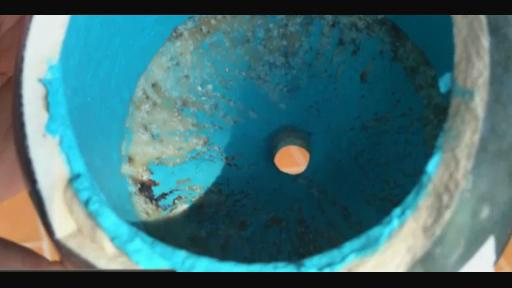
有2个陶瓷的反应器的里面做了纳米涂层。另2个是具有纳米涂层的中心鞘在其中，在这两种情况下我们都要研究它们的行为，在我们打开之后。另外的那两组是以完全不同的方式制作的。
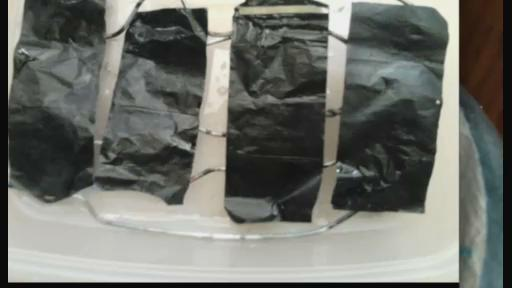
我们给那些铜箔做了纳米涂层，我们把它们粘铁到了反应器核心的背面，
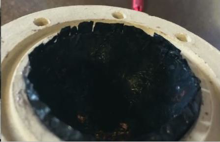
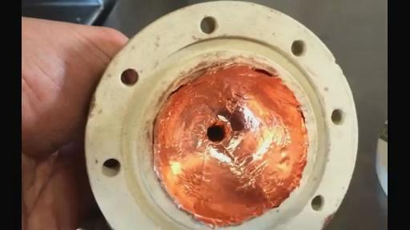
或者我们在里面放了纳米涂层的中心鞘，然后我们用气体的气层去产生了等离子体，所以我们现在有两个系统，这些由半球和整球的利用气体来达到等离子体条件，然后在新系统当中我们用到了新材料的等离子体是甘斯状态的，可能是25-35%和水是混在一起的。因为当我们如果不把水放入甘斯状态的材料话，这些甘斯就会粘到一起。所以我们用水做润滑剂一样，以后我们可能会放各种组合到里面。然后看看我们能够做什么，因为我们不可能制造真空然后把甘斯放入其中，因为所有这些东西可能会被往下吸入到系统中了，我们有这3个系统的区别是，现在我们有一个在物质状态下的等离子体产生了相互作用。然后和另外两组是等离子体，里面没有物质在其中，是完全的等离子体状态的。甘斯和纳米涂层之间的相互作用可能会在几天或者几周之后我们进一步做实验的时候可能会显示出来。对于那些ARMEN制作的甘斯反应器，我们在4个核心中填充了4种不同物质的组合，在我们有的另外两组注入气体的组合中的只是等离子体。在注入气体的反应器里面，只有一种在等离子体的状态。而在甘斯状态下的，我们有一个非常特殊的状态和情况：我们有一个固定的纳米涂层在两个反应器的外核内部当中。在这个球体的外边也进行了纳米涂层，然后在反应器核心的里面我们有甘斯材料，它们本身是等离子体的在进行着旋转，
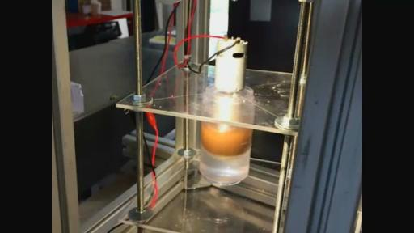
所以我们已经创造了了双磁场，一个就是纳米涂层的磁场，在我看来，这就是复制了行星的内核。这其中的含义就是，在这个核心的就是它由分层的甘斯和液体在其中的行为就会完全像地球内部的凯若琳核心一样。因为你现在有了一个纳米涂层的层了,因为我认为就是在我的一篇论文中(我想它可能发表了或者我们会发表它)就写了关于地球的内核不仅仅含有物质，而且还有等离子体和甘斯。所以现在在这两个反应器中，我们差不多就有了一个地球内核条件的复制品。所以我们就要去看一下这两个反应器里的每一个都是如何表现的，这个美妙之处就是我们在这里有的一个插曲就是：我们有一个甘斯改变了它的状态就变成了一个混合体，所以我们把它放在了中心核，一个反应器里是CO2，一个用CH3，一个是氧化铜，这些都是甘斯的。所以实际上，我们相对于那个中心反应器就创造了三个不同的行星，在中心反应器我们有3种材料的混合。所以就比较容易去测量周围的场体，还有在中心反应器和其他反应器之间的相互作用，来看看场体之间的高低。看看这些场体对于装入CO2的反应器，或者CH3，或者对装入CUO的反应器会不会有增减。
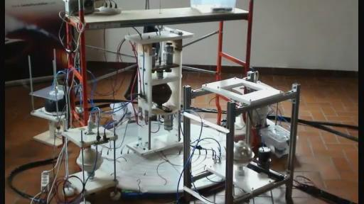
这是我们第一次达到这样的状态，就是使用这种混合的物质。就会给我们一个很好的星体系统和星系系统的迹象。如果我们要进一步去研究其中的细节的话，这些可能会花数年的时间才能明白，因为当我们增加了速度，我想我们能达到了900到2000转每分钟的话，这些甘斯反应器就会打开一个完全全新的科研和进展的新维度。这是非常有趣的，当我昨天看这些数据的时候，这些数据是非常一致的和稳定的。然后我把放置探测器的位置都进行了标记。这些显示的数据是非常奇怪的，是特别特别奇怪的。可能需要花我们很长一段时间来确定这些数据，在三维的情况下这些数据会是什么。但是如果我假设的是正确的，但是我相信的是，我可能也会是错误的，甘斯反应器就会表现成为更加有力量的系统。这个理由就是，因为使用了这种单一的材料，而且你正在和成百上千的彼此挨着的等离子体在打交道。所以这个就允许你创造这样的情况，根据在反应器内部的甘斯材料，以一种更简单的方式来进行，就是我们需要的在外部的材料。
但是这些我们会在以后的研究中会展示出来。现在这些在笼子里的反应器我们把电机都关闭了，没有一个电机是运行的。我们试图去看它们之间确切的相互作用，就在它们的内部和外部，因为内部没有电流在里面去影响它们，唯一能够影响的就是探测器。这个过程我们现在基本达到了，但是还没有达到把这些等离子体混合起来展示它的影响，但是在当前，除了这4个甘斯反应器的电机，其他的反应器电机都没有在旋转，所以在这个笼子中的内部和外部的所有的相互作用完全是等离子体性质的。所以我们去看它们能够失去多少得到多少，这是很有意思的。看看下面的整个过程的下一步会发生什么，大家对于这些所说包含的细节有什么问题吗？或者我们再去解决其他的问题。
VINCE：所以你的甘斯反应器内核中是另外其他三个位于120度反应器中的材料的混合体，所以那些120度位置的反应器仍然是中心的一部分，所以这样是有磁引力场连接的，凯史先生，是这样的吗？
KESHE：这是我们想的，但是具体会发生什么我们还不知道，就是这个材料最终在这个状态心下会变成什么样。因为我们在用这种蓝颜色的材料。ARMEN对它进行了清洗，但是它突然改变了颜色。然后放了一夜它就改变了颜色。我们看到了那个现象，有2个因素，我想是有人把这个故意的混合或者分开了。但是另外一方面就是这个材料甘斯所处于的环境的改变，甘斯就会改变它的特性。所以就改变了颜色，但是当你把这个蓝色红色和白色的混在一起的时候。你也得到了这种相同的复制品。你可能会得到颜色浅一些或者深一些的材料，但是这个在一天当中是非常偶然发生的，在很多方面，我们必须保持警醒的状态，所以我们大家的大脑不能想的太狭隘，所以我们保护开放的状态。但是通过我在这个时候所看到的，这种深颜色的东西就改变了自己。就是这三个材料的混合，因为我把这个三种材料混合到比较接近的状态。我也咨询了其他的科学家，就是那些在后台和我们工作的得到了他们的观点。他们认为材料是被混合起来的，所以我们假设就是这样子的。所以就是中间的核心就有了这三种的混合，但是我们会看我们是否是正确的。大家必须认识到这也是我和知识寻求者们所说的，即使我们当前是在很安全的状态，大门是锁着的状态，没有人会进来和出去。但是有的人以不同的方式和形式来进行破坏，所以我们必须有所警惕睁开眼睛看着这到底是怎么在一整晚中发生的。这个氧化铜就是自从我们第一天就制造出的甘斯，基本上到现在有4个月了。

我们从来都没有看到过它改变过，就在2种情况下改变过，一个就是把它放在办公室里面，铜的甘斯基本上是改变了颜色，就是特别像大脑一样的结构，就是大脑当中的蛋白就特别像奶油状，上面有一个黑色的线在上面，因为有人可能把这个不应该动的给动了就造成了干扰，自从那之后，在一面就有了黑色的线，但是任何东西直到那一天就基本上都是相同的颜色了。甚至ARMEN给它们清洗也是用相同的颜色，现在我们用了更多的材料，因为我们把原来其中的一个原始系统给关闭掉了，因为不论怎么样它都不工作了。现在我们有了更多相同的材料可以用。当这些知识寻求者们回来的时候，我们有一个氧化铜的反应器在楼上的会议室。我们有一个反应器只装了是氧化铜，然后内部有一个内核也是氧化铜，当我们回来的时候我们第一件要做的事情就是，一个人坐在楼上，一个人在楼下，我们会试图用我们设计的这种内部三维的控制，就是一个人坐在楼上要决定，不要忘了我们以前做过的等离子体反应器的实验，所以你们都知道这样一点，就是知识寻求者坐在反应器的前面，他们给反应器想给予什么就可以给什么，我们看到了反应器数据的变化，然后他们再从反应器当中拿取他们想要的，然后反应器愿意给他们的就显示出了数据。下一步当我们回来了之后我们第一个要做的就是，现在因为甘斯反应器已经运行了很久，要做的就是这种三维的遥控控制。我们要看看这个是不是通过我们坐在楼上的人去干扰这个数据，就是从15米或者100米之外，对这个实验室可以改变这个系统的磁引力场，看看这是否是可以瞬时0延迟的完成。我们最初就把它建立起来了，我们最初几个月就谈到这个设计，我们几个月前就谈论过，现在这些系统一直在运行着。要感谢JOHN,ARMEN在离开之前做了很多的工作，使得我们能够有可能对这个进行实验，有一个人坐在屋里看看能否和这两个系统进行远程的交流，通过这种想法和这种相互作用的方式。这是相当可能的，即使不能发生也不是说这个系统就是错误的。只是说明我们没有把自己的调节到2个反应器的磁引力场或者波长上，就是我们的大脑的这个场体没有调节到等离子体的磁引力场范围。楼上的反应器和楼下的反应器是完全一样的材料，同样的设计，同样的电线，所以它们应该是有一个连接，然后看看是不是我们会影响内部的核心还是中心的核心，还是说对装入CO2的反应器或者对有氧化铜的反应器有相互作用。在过去的6个月中在周围有很多的误解，就是我们必须要建立系统才能够达到这样一个位置去做这种直接的研究，现在我们又建立了很多的系统，所以他们这些的相互作用。在这6个月我们所做的事情当中，我们被允许向科学界展示了一个全新的维度。人们知道当我们周四周五关门的时候我们这里就有一些人在这里，由于一些特殊的原因，这些特殊原因我们也许在以后会公布，那些最高水准的科学家们已经单独的观看了这项科技，他们感到很震惊，昨天我和一个人进行了谈话，他仍然还在震惊之中，就对于放在桌子上面的东西，
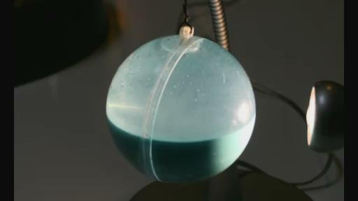
整个的这个过程就是。因为这是有史以来第一次的，我们使得科学变得简单和实际的可以让人们明白。在造物界里，宇宙世界里，在天体物理学所发生的没有任何的秘密。这个是我们达到的一个主要的成果，对于基金会还是科学界的将来，不管发生什么，我们已经展示了等离子体可以用很简单的方法来创造，可以以一种非常简单的方法来维持。等离子体的速度可以被改变，当我们在实验室当中就通过很简单的方法证实了这一点。我们展示了能量并不是我们基金会整个结构里主要关注的事情。我们现在展示了等离子体能够并且被保持着，还有可以以基本上0成本的方式产生出来，我们开始使用了电机，但是后来我们也把电机关闭了。我们现在在运行的8个反应器，完全就是宇宙系统的复制品，这些反应器当中没有一个有电机，我们和知识寻求者们在这里已经做了这个实验很多天了，我们靠增加一点量的氢气，然后我们就能够看到等离子体力量的变化，这是，MAREK你可以去读这种甘斯材料对地球上的植物的影响已经有很多年了，所以我们就可以这个以这个为基础前进了。我不知道你们可以继续保持这种叫法，你可以继续把它称之为奥玛斯和灵魂。当我们可以的时候，我们会把这个公开释放出来，这个植物准备好了就可以这么做，MAREK一直努力在看其他人看不到的东西，这就和他在这里产生的所有问题是一样的。除了那些不是政府机密的东西和那些政府的事情，就是他们给我们就必须要看的那些东西。MAREK你到时候就会看到一切了。我们继续准备这个植物，这样你就会独自的拥有它。这一周我看到了这个图片，就是我偶然看到的。我对那些在过去2年中为我们进行研究的人们说，我们试图和他一起到非洲在更大范围上的一起共事，MAREK你到时候就会具有这一切的，不用着急。另外一方面，甘斯的性能必须让别人单独来进行检测，因为我们没有甘斯材料评估的数据，来自外界的独立的评估。我们现在和一些机构谈论看看谁能做这个。到目前为止有很多研究和评估我们是知道的，是被政府和不同的组织资助的。有一些不同的政府写了论文，他们只给了我们一些他们想让我们看到的东西，不幸的是，我们有一个非常好的关于甘斯的性能的报告，是来自核物理中心在过去几周中得到的，就证实了我们的发现，还有关于甘斯研究的其他论文，甘斯的表现就是作为伽马射线的核放射吸收体，这个结论被完全独立的证实了。这个系统要商业化应用在福岛事件上已经在进行中了。会被日本的公司来公布而不是我们来公布。我们把这项科技传递给了他们。
RICK：凯史先生，我想知道人们是否可以对于测试方面的进展提供帮助呢？如果在我们这些听众当中有的人也许是在大学当中工作的，或者有些人可以用一些高端的技术和设备来测试材料，你愿意提供样品测试吗？
KESHE：当然了，当然了。但是我们并不是把所有做的东西都告诉大家。但是现在每周每月，我们都是把这个材料往世界各地发送给不同的大学和机构
。对解决氚的甘斯材料的实验就是在福岛被日本官方当局进行的，4周之前我们空运过去了，这个材料被两个国家的核子中心进行了测试。我收到了一份报告证明了甘斯材料的正确性。他们对于所有的甘斯材料做了所有的光谱测试。我们会收到所有的数据，在获得那些机构还有政府的授权，就是在未来几周假期之后我们会释放这些数据。这个核子中心首先对我们送给他们的材料进行了分析，材料里有氧化铜和CO2，他们的确认是正确的，就是它们是氧化铜和CO2，在CO2的一部分中我们看到CO3和钙。钙是来自我们所使用的水。我们可以解释，因为我们看到了这种物质的簇，它们不是甘斯的状态存在的，所以我们见到了这些，我们有一个完整的分析，是由这些核子中心机构和政府来进行的独立测试。
还有其他的一些材料马上就会被测试，我们还正在谈判，因为这些测试可能会花费上万欧元，它们并不便宜，还有在接下来几周中还会有一个新的实验，希望也许在下面的2-3周里在福岛进行，我们现在就会达成一种谅解，达成一致。就有了额外的来自福岛的材料而不是从凯史基金会，这些机构是由日本政府指定的来做这项工作，我们迟早会得来自那个情况的更多的分析。就会达到这样一点，福岛的情况使得我们基金会通过一些在正在参与这个领域里进展的国家被国际上的很多机构认可。在参与这项科技在核材料和等离子体生产领域里。对于我们来说非常重要。我们准备以不通过任何的专利的形式把这些知识传播出去，没有任何的掩盖把这些知识传播给了这些国际机构。在这个过程中的一部分，现在也就是在接下来的几个星期内，有过一点问题被拖延了几天，但是在接下来几周内我们会直接的参与生产这套除污装置。就是对日本的土壤污染进行处理。谈判正在以这种顺畅的方式进行，所以我们会收到更多的分析，现在因为他们所进行的分析的就是在这些土地有什么，有什么在空气当中。我们在继续进行的时候看看能够清理和改变多少。我曾经和这些日本政府指定的机构直接进行过讨论，他们和我们一起工作。所以我们看看他们的工作会有多快的速度进行。现在就是福岛事件的状态对于我们的美妙之处就是，我跟他们说了，然后他们就嘲笑这个事情。我们不明白日本的文化，在很多方面上因为我们没有住在那里，但是他们试图在跟我们解释福岛事件使得这个国家完全团结起来。他们试图拯救这个国家，就是当他们知道了这个问题之后。就好像来了巨大的台风一样，人们做事情只是为了帮助这个国家。不管对于他们个人发生了什么。他们说这个是一种国家的责任，去为这个国家找到解决方法。这让我感到非常的惊讶。就是这些人怎么会变得没有了界限，就是他们怎么样可以帮助，我们也看到这个事情也感觉很惊奇，就是和我工作的他们的政府，就是在这个事情上。对于通过这种福岛事件和凯史基金会的联系，我们不会完全公布，但是我们正在和一个特别棒的国家在打交道。从灾难之中之去拯救他们自己，他们就看到了我们这部分的工作。对于他们来说可能会是某些问题的可能的解决方案。在这个事情当中，很多多的事情就开始见到了突破口。使得很多事情快速就变成商业化的事情了，你会看到凯史基金会的技术中很多东西马上就会在日本被商业化，在接下来的60天当中。在之后的2-3个月当中，你们会看到凯史基金会在日本各个方面有巨大的发展。就是凯史基金会在日本。这个就是现在我们工作的进展，不管对于我们来说会发生什么事情。日本已经看到了这个工作，看到了这个材料。我认为现在有一个巨大的问题，就是当核电站损坏之后他们国家花巨大的资金在这种燃料上面。另外的一个途径是发展这种商业来替代原来的能源，所以用凯史基金会的系统来替代能源。我们和他们保持了密切的工作。生产第一个系统的材料已经被传递到了在东京。所以我们期待在意大利生产的第一个系统就会在日本被完全开发和商业化。就完全的被日本政府和在这个行业里的公司进行。这是一个我们很快就会看到的变化，因为我们看到了这个变化。我们已经向他们提出了建议，所以我们要求他们不管他们学到什么东西开发出什么，因为我们是免费的给他们的，所以他们要把这个反馈给基金会，然后我们就可以把这个和全世界来共享，他们说这是一个做生意的奇怪方法，我们甚至都不知道如何做，但是我们必须发现一个新的结构，这是此刻对日本人而言存在的一个问题，我们正在和两个不同的公司在进行交谈。分别谈的，他们相互之间并不知情。所以很有希望你会看到日本政府完全将凯史基金会的能量系统在日本进行普及。我要求那些党派人员，请他们必须要为日本而留下，而不是成为另外一个队知识进行出口贸易的国家。所以我们会看到这个能量板和能量发电系统在日本发展比其他各国都要更快，因为他们有这个需要，他们在目前的行业当中指定了公司，不是需要谁还需要去找什么人。对于日本，我已经给了他们所有的技术细节上去进行如何来运行未来的第一个系统。然后他们就会走到商业化的一步。进行生产这些系统然后就可以清理土壤污染了。通过相类的机构。但是他们认为还有很多政治上的原因，我们必须要等着看。所以这些信息的确认会从他们那里发来而不是我们，他们可能会在这里支付巨大的资金。有很多的事情都做的也很有意思。可能有很多人还不能够理解。在基金会的过去这些年当中。（第一次翻译截止00:39:05）
有很多的事情都做了也很有意思。有很多人还不能够理解。在过去这些年当中。在过去的几年当中，我们发现人来人往，他们来的时候可能是由于不同的原因，走的时候也是由于不同的原因，但是他们来和走的原因给我们带来了很多的礼物，不管他们在这里停留有短或者多长，他们给基金会带来了一些小的礼品，我们将来把这些传递给人类和所有的知识寻求者，给其余的人类。其中的一个情况就是，我们来了一位特别美丽的女性，就是YOUKAKO。她来到这里完全是因为各种不同的原因，她在这里和我们相处的时间相当短，然后她离开了又是因为不同的原因，但是她在很多方面是仍然和我们在一起的。她把福岛的礼品带来了，对于这个礼品我非常的感谢她，对于她带给我们东西我是非常感谢的。很多人可能就给了很多的批评，关于她所做的事情。像我们说的，你们必须要明白他们日本人的文化，她是把自己完全献身于为她自己的国家找到一个解决方案上。然后很多人就因此说了很多垃圾的评价。就说她得到了她的东西，然后就把她送回到日本，她是由日本人赞助的。因为他们自己做了一切的工作因为他们想去拯救他们的国家。各个人想的其实就是这样了。但是在日本的很多高级官员看到了她所做的。很多在日本的科学家也看到了她所做的事情。通过她的工作，很多在核子领域工作的科学家们也在看解决方案。这可能是一个可能的解决方案。所以她在日本的三天工作，就是我们在网络上实时转播的这个，就带来了凯史基金会和日本政府的合作，所以说并不是他们突然就出现了。这也就是时机，要感谢她的到来和带来的东西。她离开了我们，我们一直没有从她那里得到消息。我对她表示衷心的祝愿，不管她现在在哪里，但是我祝愿她一切顺利。她为她的国家做了巨大的服务，但是就是这三天里的工作数据现在被独立的核子中心证实，已经使得核子中心对这项先进技术打开了大门，在日本打开了这项技术的新的篇章，现在我们就和他们有了直接的合作，但是你们大家知道的，日本是一个非常骄傲自豪的国家，政府不会允许比如让凯史基金会这样的组织去到福岛然后到那里工作，开始发展不同的工作和技术，他们要通过自己的方式。像你们知道的那样，如果你们知道日本的结构，通过经济条件，通过贸易部门，我们已经知道很久了。就是那些和我们一直合作，我跟他们有很多个人的接触和合作自从80年代早起开始，我们和其他人建立了这种关系网，都是通过一些日本的公司实现的，所以现在这个解决方案讲提供给日本国家以一种他们日本人的合作的方式进行的。
这就是为什么我们不会在那里的原因。是的，我可以看到这种状况，她来的时候带给了我们一个礼物，现在这个知识和礼物就以特别好的方式回到了我们所说的日本手里，这就是我所说的人来人往。不管时间的长短，像我说的所有人都是一个礼物，即使那些相对我们来做破坏的人，他们实际上对我们做的也是好事儿。就在很多方面上就像我所说的，因为我们的工作基础就是作为一个礼物分享给大家我们所具有的知识，有一些人他们想从我们这里偷窃破坏，或者想要引起麻烦。通过他们自己的方式来做这些，最后的结论始终还是会对我们凯史基金会和全人类有益，我过去受到了很多比利时政府和他们结构中的责难，但是我就一直和我的家人说。感谢他们进行的破坏。他们认为他们的破坏是可以停止我们来保持住，使得这个知识被他们所有。他们就允许我在比利时可以待了9年的时间，实际上是就等于囚禁了9年的时间，不允许这个技术被释放出去，他们给了我时间可以来写文章，可以发展这个技术，
如果没有那些像汉斯先生所创造这些逆境，和警察试图三次想暗杀我的行动，还有这些从皇宫来的国王施加的压力。就囚禁我在比利时可以允许我写作和进行所有的研究，换句话也可以说我也祝福他们的灵魂，灵魂知道他们在做什么，但是实际上他们物理上在做的事情实际上正做的对他们自己来说是对，但是对我们来说是错误的，但是最后的结果是这些书籍和我写的文章被发表，还有释放这些科研的研究，在这9年当中在比利时所做的，如果不是在比利时这样的话，其中大多数事情我可能永远都不会做出来。所以比利时政府给我们带来了巨大的礼物，即使在对我们人类非常有益，但是我们自己度过了一个非常艰难的时期，但是这些礼物中最好的一个就是，当他们试图来封锁我们的时候并且没有那么做的时候，就把它给了德克，正是德克就准备可以把所有的知识转变成照片。他实际上就是提出意见可以把这些东西记录下来以备将来的人们可以去应用它。所以这就是每次我们看到的，当每一次我们被阻止停下来的时候，即使那些人试图来阻止我们，使得我们基金会能够往前走的更远，所以现在我们看到了在福岛的工作，这个过程必须作为了一个国家的行动而不是仅仅几个人来做，或者像YOUKAKO一直在试图为那些少数的孩子所做的，我们要去解决整个这些日本的污染，而不是仅仅让少数的孩子离开日本，让孩子们离开日本或者从其他地方来到我们这里，然后待了几个星期后又回去了。我希望他们可以被帮助，我知道他们需要帮助。但是现在这个进程又回到了日本去帮助日本人，但是这个污染的进程不会在日本就终结了，这个污染已经到了中国的北部，还有北美洲了。后续的情况仍然是未知的，我们不知道会怎么样。但是现在这个过程已经进行到了我们的下一个阶段发展。这个发展有可能会帮助到世界上的其他地方，通过我们要完成的事情。有很多人围绕着基金会工作，但是你们从来看不见他们。我们也没提及过他们，但是我们必须经过这个过程，但是这是发展中的一部分。我这一周和一个人在说，他说人们和他们说话的时候是很带有嫉妒心的说他们可以赢，不应该有这种嫉妒，因为我们不可能去教每一个人，没有谁比另外一个人更加的高级，我们选择来这里的人是选择他们的原因是他们就是为此而生的，如果他们来的时候没有得到他们的利益然后他们就离开了，或者没有得到他们想要得到的就离开了。这就是表明他们还没有花他们的时间和服务在这里。所以他们不应该具有这种嫉妒，他们不应该有嫉妒，因为我们单独的教某些人或者以某些方式来教某些人，就是这种必须要有这种天分和通过灵魂具有的知识，当人们来到这里作为知识寻求者的时候，我们开始看到了这种不同的人会有不同的用武之地，有的人可能有些事情是不会做的，但是以他们自己的特别方式，他们对这个事情仍然是一种方式来服务，这就是为什么他们会在这里。这意味着他们的时间并不是在这里，他们仍然做他们自己的工作，而不论他们对基金会说或者做的在过去或者未来是否正确，或者对于我们在基金会里所做的，因为基金会就是你，你破坏了基金会的话你还是对我们做了好事情。因为现在有更多的人明白了这些人的心智是多么的狭隘。因为他们总是好像看到了自己的利益，看到了能对他们怎么样，而不是作为一个整体来看，所以人们来到这里又离开。我们教学之后我们也离开，每一个人的生命都有短暂的扩展，所以我们只是看我们能够做什么，有的人来这里比如想要只学习一个专业上的事情，因为他们是做为这种他们的专长，如果他们自己得不到的别人得到的话，这就意味着我在他们当中看到了这些人不同的美妙之处，但是他们看不到他们自己，直到他们意识到这些就是他们自己需要来发现的，所以没有谁会比别人更加高级，我们在基金会中也是给大家展示了这一点。凯史基金会的核心现在作为知识寻求者们变成了3-4个人，这3或者4个人，如果你仔细看的话，他们所做的研究，上帝知道，也许有200-300人做的工作量，在这里面所做的研究工作的量是巨大没有界限的，
我们和大家分享知识的方式，我们每一天每一张照片，我们放在那里的所有东西，很奇怪有的就有些人在网络上发表言论说你没有对我们在过去几天里在网上对我们有这样的评价，如果你希望知识能够传播出基金会或者到一个国家之外的话，那么在你自己的国家你们的建立基金会。然后你自己造5-6个反应器或者10个反应器，然后付钱找人到你那里去做这些，你们从外面希望我们基金会给你们做所有的事情的话，然后他们说为什么基金会是在意大利而没在其他地方，你在自己的国家资助建立你自己的基金会，我们那个时候的中心是在比利时，现在我们到了意大利，那么对于比利时的这些科学家们发生了什么呢？有1-2个反应器在WEST
FLANDERS（比利时某地）运行着，你可以筹措你自己的资金，你可以建立你们自己的中心，制作你自己的反应器来进行研究。我想现在时间已经发展到从基金会到了每个人到每个小组，然后变成整个国家来支持你的研究中心，因为你正在等在看下一步会发生什么的话，现在你就看到了我们在这里做的事情，所以你自己需要去做。
RICK：凯史先生，有人在线他就问了一个问题，他就问为什么我们用反应器来这个事件来划分国家呢？用国家的边界来使用反应器，就是这个反应器是意大利的，而不是给其他的国家呢？
KESHE：不是的，不是的。
RICK：我们不把这种开始的设计公开给所有的人把它扩展为世界上各个不同的地方，一起来共享这种扩展。
KESHE：我认为我们这样做了，我认为知识寻求者们已经这样做了。
RICK：我认为我们在过去的几年中一直在这么做，通过这种网络教学的形式。
KESHE：我们这种共享知识的方式，我想即使这些人，我最近被一些在意大利的科学家们告知说：你知道你一直在通过互联普及的知识已经把这些百万上亿的钱都扔出去了吗？而且你现在还在寻找赞助。然后我说因为这个不是我的事情，人们如果支付捐助我们的话，我们接受。我们对此是没有边界的。这些说有国界问题的人是很愚蠢的，就像我说的你们每个国家要为你们自己的国家发展你们自己的系统，因为你们自己的短视就不能够团结在你所在的区域里的人们，不管你们国家障碍还是语言障碍还是什么障碍，你们就指责我们基金会为什么只是在意大利，或者只在比利时或者在其他的地方，但是在保加利亚他们就建立了凯史基金会，保加利亚人他们就制造了自己的反应器和进行了自己的工作，这是一个我最近在网络上看到的事情，就是有人向我展示，我认为RICK回答了这个事情。就是如果每个人用一欧元，所有凯史基金会的支持者在一个期限当中出一欧元，然后如果你了10万或者不到10万欧元，或者达到四分之一，你可以自己建立你自己的反应器和自己的中心，然后你可以跟我们联系，我们就可以给你们你的信息，然后我们就会给你信息，所有这些个体的人们，用葡萄牙语，西班牙语，还有在日本和中国的人，他们这种凯史基金会，他们开始建立他们自己的中心。我们不是那些大家所叫的那种学院，然后关起门来讲什么秘密。我看到所有的反应器是在上午和夜里制造的，我在网上看到这些照片，没有一个机构学院曾经做过这个事情，世界上没有任何一个组织机构做过我们所做的事情。把这项技术完全的公开，你用自己的工作给自己设置了边界而不是我们做的，中国人他们具有自己有力的凯史基金会，所有的书都被翻译了，马上就会被印刷出来。可能有1万或者2万人，还有可能有百万全世界的人都追随着我们基金会，你们从现在起要团结这些人建立你们自己的中心，我们把我们有的知识给了你们。现在你们大家看到，大家都开始了这个过程中制造了自己的太阳能电池，在凯史基金会你能做的第一件事情就是开始来在你们自己的国家里产生形成基金会，以你们自己的语言不管是什么语言，去制造你们的第一个太阳能板，第一个太阳板应该是你们每个人现在都可以做到的。你具有这个材料，我们告诉你们怎么做，就是意大利人在下一个假期结束的时候就会制造出他们的第一个，我们希望可以在下周之前展示出来，希望在假期结束回来之后的第1-2个星期内向大家展示，日本人会做他们自己的，在加拿大和美国你们已经具有了足够的知识可以制造，你们有人在那里可以做这些，你们在等你们自己像小鸡一样被喂食，你经常能够见到这样的情况。我们经常在公园里面看到这些燕子，那些燕子小燕子长得都比他们妈妈大了，但是它们还在扇动翅膀等妈妈喂，因为它们已经习惯了，即使它们已经可以高飞自己寻找食物，现在已经到了那个时间，你们已经看到了可以怎么样做，你们这么多年谴责我们说我们没有把所有的东西教给你们。这么多年都只是想得到凯史基金会的溶液，我们给大家展示了那个，你们没有气体，你不能够得到气体，那么很简单的就是现在我们用甘斯来做实验，你自己花一美元一欧元来买烧碱（氢氧化钠），然后把几条线做涂层，我肯定你们会在周围发现几个可口可乐瓶子，或者会有一些水桶，还有一些个盒子，你就可以制造你自己的甘斯，我确定你可以去任何地方，甚至如果你们任何人有小孩在家里的话，用他们的玩具，然后把甘斯放在里面，放一个小的电机，然后你就可以开动你自己的系统了，这个可以花多少钱呢？10欧元？你不需要一个特别复杂的系统。(第二次翻译截止00:57:39)
VINCE：不用很复杂甚至有很多的玩具和其他的东西本身就有电机在里面，你的意思是就是说我们不需要去买任何的东西，随便就像废品的东西在我们周围在街道上看到的的也是可以利用的。
KESHE：差不多这样吧。这也是为什么我们在这里面第一个制造的甘斯反应器，我们用了一半的塑料瓶子，我是特意这样做的，来显示这种多么简单可以在任何地方都可以制造。你在寻找真空泵，你在寻找这些气体，不管是什么，我们有捷径，我们在这里面做这些实验，我们向大家进行了展示，你们也看到了这些图片。如果这些你还是觉得力不能及的话。（VINCE插话）不不，停一停，让我把话说完，让我完成这句话，如果我们制造这些甘斯材料对于你来说还是太难的话，那么你可以直接从你做的第一件事情里就可以得到能量：当你把这些铜线做了纳米涂层的时候，如果你把纳米铜线以小段的形式大概是10-20公分小段的一个接一个的连接起来。你必须要用砂纸把铜线的一端涂层打磨掉这样你就得到露出了铜线。你把足够多的涂层的线都连接在一起，你就可以制造出足够的电能来给你家里的灯照明，比50美分还要少的花销，ARMEN,MARKO,YVAN在他们离开前的一天他们就在桌子上面做了这个实验，这就是我对手电筒做的，你看到我给大家展示的手电筒，手电筒里没有什么魔术，你们还在在等加拿大人，意大利人或者日本人在做它么？你们都已经有了一切能做到能源的自给自足，但是你们仍然在寻找那些几千瓦的能量，特斯拉的时代已经结束了，你会回到爱迪生的时代，回到直流电中，特斯拉利用了他高明的智慧的方式向我们展示了交流电，在当我们不明白宇宙的结构时候就给了我们。现在我们明白了宇宙的结构。现在我们知道了宇宙是怎么样工作的，现在我们可以复制了这个系统，宇宙里面任何东西都是用直流电工作的，爱迪生存在的问题就使得他在这个游戏当中败给了特斯拉，就是因为电能的传输，他几公里就需要增压，现在这些材料具有超导性，你不需要这种任何的增压，第二点它是可以吸收能量。我们现在看到了，我们的一个专利怎么样被他们上一次在法恩伯勒做了一个声明，就是他们发现了在低温下材料可以吸收这种99.9%能量。好吧，你现在已经做一个凯史基金会公布的专利的复制品，我们把这个专利已经向公众公布了，然后你现在宣布你制作一个材料，但是这个黑色材料我们已经给大家展示过了，这个黑色的材料是什么意思呢？它吸收什么呢？它吸收了99%的光谱。好的，那我们就要来提出一个问题，就是它所吸收的能量是什么？这个能量不可能吸收后就消失了，能量必须要去到什么地方，即使你手里拿到纳米线的话，它们也一直在吸收能量使得自己一直保持着黑颜色。一定会在什么地方就有一些流走的，否则黑色的层就会爆炸。如果你发现它流失到了哪里去了，然后你把它们储存起来，然后你就装上设备在层中所吸收能量，这个东西吸收，现在你把它们按照顺序连接起来，然后你就得到了不同的这种电压和电流的量，你把它们平行的放起来，你就可以得到不同的这种电压和电流的分布，你把它们这些平行的电线给混合连接在一起。然后你就达到了你系统所需要的能量的，你可以点亮灯，用于你的计算机，或者你用于的炊具，随便你用于什么，你已经具有了知识，人们一直在要求自由能源，我已经给了你们，它已经在你的手里，只是你看不见而已，这是你的错误而不是我的，然后人们一直在要求说我要自由能源，给我自由能源，你给意大利还有其他人，是你的心智太狭隘了，当我们第一天开实验室的时候你们就已经具有了它们，这就是贪婪的人们，人类的盲目。
你做的第一个电线的涂层，然后放在瓶子里面，这个是你的能源，但是你从来就没有看到它，然后你就一直在寻找大的更大的、更大的、更大的能源。当我和这个日本人交谈的时候我说你看到了在电灯和开关之间的电线有2-3米长，你就看到有多少小的线在它们之间，你把它们切断以后把它们切成段然后以正确的方式连接起来。你可以点亮整个的房子，就用这点亮一个灯泡的一条电线就可以办到，因为我们必须要改变我们的照明系统从交流电到直流电。就是这种在手中的LED灯，ARMEN就做了那个实验，ARMEN建立这种系统几乎是不花什么时间的。这个想法出现的来源，这就是将要发生的，你有了你的第一个能源系统，自由能源系统，你叫它免费的，其实它不是免费的，只是需要正确的明白这种黑色材料的结构。就是当你把这些电线放在烧碱里进行涂层的那一刻，然后你让它干燥，这是有一个原因的，我告诉你当你第一次把电线从碱液里拿出来的时候。就是第一次放一个万用表来测量它。把流动给重新排列。这是你唯一做的方式，这就是为什么你要做的。当你把流动重新排列的时候，当你利用这个制造能量系统来把顶层的能量吸收走
，把这个能量取出来的时候，能量就都往一个方向前进了。这个就是其中的一个问题，当我们在实验室里面在进行第一个布置的时候看到的问题，这种流动有的时候突然不知道为何会转变方向，是因为这个电线是以错误的方式设置了，当你把这些电线设置连接起来作为能量系统的时候，把它们连接到电池上，你可以放一个这种9V的可充电电池，或者随便的一个什么电压，或者用一个更大的充电电池或者你想给它加入一个电容来充电，一定要记住，这个是特别重要的就是，当你建立这个系统的时候你是怎么使用你的万用表的，（译者注：你是需要记住的就是把的万用表放上去脉冲的时候你是怎么样去测量的）（福岛清理实验视频：
http://v.youku.com/v_show/id_XNjcwMTc2MjY4.html）因为如果你把这个方向前后颠倒的话就会产生问题，大多数时候可能不会，但是有的时候你就会有问题，所以你把这些电线连接起来给充电电池充电。你可以给电池充电，但是这么做的优点就是这样你的纳米涂层就可以一直昼夜保持黑的颜色，不管黑天还是白天，它们就可以不分昼夜吸收所有的能量。你要明白这个结构，就是我在过去的这几次网络教学当中向你们解释过的，你把你自己的电池放在接近地面的位置，就可以吸收地球的所有磁引力场，就是从地球内部出来的所有的磁引力场，夜晚的话会比白天还多，因为这个就是地球和太阳的位置的磁引力场，所以你们一直在恳求，要求然后向我们喊，哪里有免费的能源，然后巴拉巴拉的说一堆。现在你已经在你的兜里有了它，就是当你第一次把第一根线放在碱溶液的时候你已经拥有了它，但是你对此视而不见。今天如果你是在非洲，你就找到一个根线，像他们运动给你们的电视，因为他们必须要往你们的国家来倾倒这些电视电子产品，因为人们不想要这个东西了，那个从插座到电视机的这一段电线就是你的能量源头。然后你就可以把这个能量卖给西方，然后可以将能量再送回到材料里。每个10厘米纳米涂层的电线和2米的具有的能力是一样的，因为在纳米涂层之间的层的平衡不会有允许更多的变化和吸收，你拥有的线越长你能吸收的越少，但是在最后同样是作为整体吸收的，所以我们发现10-20公分之间的长度就是你需要的最大长度，你确保你在一端要接到氧化铜的涂层表面，就是用没有涂层的一端来复制这种纳米涂层的层，每连接一次，用一片铜连接一片黑色材料。把它们串联或者并联起来，如果你做1万根的话，0.5伏或者0.02毫安，然后就是这种单位长度是可以接受的，现在你想要多少安倍，多大的电压呢？
你已经具有了这种你一直想要的自由能源，就是你一直就在喊叫着要得到的东西，它已经在你的眼前已经有6个月了，但是现在就像我一直在说的我们要去找太空科技，发展这三个甘斯的反应器。这就是这种最高级发展的一部分，就是我们可以起飞然后移动，然后还有其他的发展，你们所有在听这个讲座的人们，你们应该从今天晚上你们就不应该缺少能量了，就不会没有灯光的能量了。如果你像继续这种喊叫就说你就去帮助人类的话，那么就在你的家里面寻找看看你周围有多少的线正挂在那里吧。
然后在你的自由时间做一个这样的系统，然后就为你的邻居做一个电源，而不是先给你自己。然后你就作为人类来为别人进行服务了，然后你就会停止对基金会的这种埋怨。直到我们制作甘斯也是用相同的方式，问一下JOHN如果做一个单独的罐子会花多少钱呢？只是几分钱。把铜给它涂层然后放在里面。让我们这么做吧，然后你就可以有了你自己的起飞装置，你一直在要这种免费自由能源，这就是你的免费自由能源，这就是我在托斯卡纳给大家展示的手电筒，这就是手电筒是怎么工作的。我在过去3-4年中展示过的，我从来不做这种魔术。没有魔术的，我是一名科学家。现在你一直在要求凯史基金会的溶液，这凯史基金会的溶液就是能量和食品的秘密，我很快就会给你们展示了怎么样用相同的一条电线来制造食品，如果你一直在喊叫我们不需要边界，国境线，你要说你自己的语言，进到你自己的实验室里，你知道如何准确的在你的厨房做，用半公斤的烧碱，然后你可以做200.300或者400个，上千个发电单元在你布置到自己家里之前先给你的邻居，然后你就知道我一直在做什么了，我教你们，我给你们这些东西，但是我从来不坐下来给我自己做点什么东西，你认为我不能够做一个200LED灯的系统把整个房子点亮吗？你支持我你就到了世界各个地方了，你看到过这样的事情吗？所以那些来侮辱我们就认为他们所认为的那样。你知道有些人总是在谈论一些事情，就是特别消极的讨论事情。我认为他们必须要躺下来或者坐下来直到他们能够理解他们正在做什么，现在这些负面的行为是时候该结束了。现在你可以用你所有的东西来做出积极正面的贡献。你要足够的能量那里就有充足够的电来为你充电，然后你要发现这种在你家当中可以充电的电池，然后就建立起来9V电压的电池。这种9V的电压能够点亮什么呢？这样你就知道可以做什么，然后你就可以教你自己下一步，下一步就可以为你的邻居们还有其他人来做这件事，这种科研就是为了人们能够明白整体的全局，如果你以那种方式来进行的话，需要人们花费数千年加数千年的时间。我们现在的做法就是我们是要抄近路了，最近我向一些科学家们进行了解释，以前人们是通过爷爷给孙子来讲故事的方式来传递知识，如果他死了就不会有任何东西留下来，所以我们就学到了就把这个知识写在了动物的皮肤上，然后我们又学会了印刷。现在我们就在做相同的事情，把这个知识通过互联网来传播，但是是给数百万的人们，就是这样一步到位的做到。没有用纸张写下来的必要，但是有的时候你需要这么做，但是现在你们在做的就是进行录音，你们可以在另外一端来记录正确的事情，如果有一篇论文，它是重要的无论那是什么都会被上千人记录下来。所以现在我们用这种特别简单的方式来教，你们必须要做这个研究，我已经打开了这个重新认识这个星球上生命的大门，虽然这个时间（对人类而言）是非常短暂的。暂时使得那些气度狭隘和心智狭隘的人很匆忙。但是从长远来看我们的计划是完全不同的。这整个的结构就是你一直在要求自由能源，那么你在你的实验室里面在你的厨房里面给这些线做涂层了吗？然后给你自己你找一个电池了吗？这样你就可以把毫安的电流存储在你的电池里面。然后把它连接到LED灯上，然后你就有了灯光。
这就是我们在荷兰的实验室里所做的，和伊莱克托杂志一起做的。我们没有电路系统，在实验室里的人告诉你们他们没有电路，当电机在转动的时候是直接的连接。但是它这样就会耗尽，因为在顶层的纳米涂层得到了这个材料的涂层，所以它们吸收的能量就会减少。所以你一直在要你的自由能源系统，你一直在哭喊自由能源，说政府就对你们做坏事。你们大多数人在这周之内应该具有足够的能源在你们的家里了。如果你知道你是在干什么的话，或者你就坐在这里等着来一个大点的能源。这些我们（01:14:40
the ????time and it needs a lot of work
）需要大量的工作，这些一直就想要别人给他们一切的人实际上就是没有能力的人，所以他们必须要待在那个位置上。那些明白的人应该像我之前所说的你们应该很快的就可以给你的邻居做一个了。我做了这个系统，我现在把这个系统给了意大利，他们做了第一个可以应用于商业的原型机，日本人他们是需要它的，因为他们的国家在这个时候花了很多国家资金拯救他们的状况，而那些美国人呢？他们除了封锁这个技术之外什么都没有做。还有这些英国人，非洲或者南美洲，我几天之前和南美的很高级的外交官交谈，我只是路过我只是想说就是想看看情况怎么样，这个大使然后就在他的办公室里接待了我。我在他的办公室里受到了他对我的高度尊重，我知道他们的政府知道正在发生着什么，人们知道正在发生什么，但是他们不知道怎么样才能够发展，所以我们就同意了，我们会把这个知识以很快的方式来传播出去给南美洲的科学团体，这样他们就可以明白多么简单的就可以做到这种能量的自给自足。政府的高级官员们他们知道我们所做的事情，但是他们不知道如何来处理这个情况，你在要求有自由能源，你已经有了它，你已经有了它6个月了，但是你就是盲的看不见它在那里，你总是在看我所展示的东西，我要展示什么东西，还有我有什么东西是不展示，但是比较有意思的就是我们看到ARMEN，MARKO,还有YVAN他们建立了一个小的系统，就是把这些小的线在桌子上连接在了一起，然后观察来测量这个电压。你看这个电线里就有这的电流和电压你从来就没有测量过。就是6个月，这些人从来没有去测量这些电线里面的电流。我上个星期给大家展示了电筒，给知识寻求者们展示了，前几个星期也展示过，就展示什么组成的，一个电线连着另外一个电线，最后连接到一个充电电池或者电容上。你可以制造一个千瓦，10千瓦，但是只是你必须要有耐心把每一块你都给它连接起来，但是有一个事情比较有趣的就是，在比利时发明这个东西的一个科学家也是一个发明家，德克知道是谁，他做了一个特别很有趣的实验，他把电线放在了水里，这个就显示了电容量。我也有这个照片，德克也有。因为我有一个扫描件，德克也有一个数据拷贝，我们可以让德克把这个信息发出去，如果你能够把这些线放在纯水里面，不含有任何矿物质的话，你可以用你的线来增加吸收的能量，
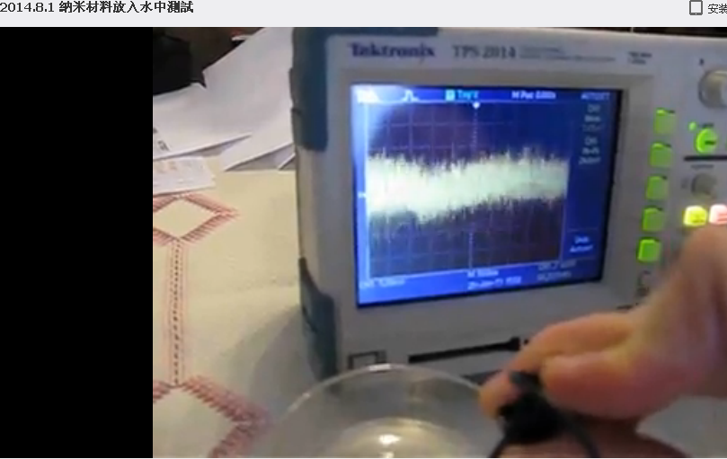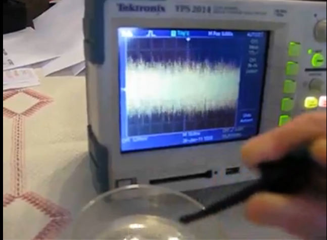
（示波器变化剧烈）
所以你可以增加它，所以如果你能够创造一个真空环境的话，把这个里面装入干净的蒸馏水，这样你就可以吸收更多，但是可以吸收的更加高，因为这个水会减速，这样纳米涂层就能吸收足够的场体。所以你可以给你自己建立一个1米X1米的线，这个电线你就可以坐下来，然后每一天的增加它的单元，你就可以制造3-5千瓦的电源板，我们曾经做了这个，这个就是我们当时想做的凯史能量电池，在比利时政府有很多行动想把凯史基金会能量电池关闭掉，他们不能够通过国王来抓到我，他们现在是像通过一些公司来在比利时建立的公司用其他的方式来攻击我们。愚蠢的人啊，你们有这个最大的能量系统在你们的手里了，然后你想把它给消灭破坏掉。这些就是那些无知人的习性。我们建立了凯史基金会能量电池来生产这个单元，现在比利时他们就要从非洲来得到了。你们如此的粗俗，粗俗到到无法理解这些。这些知识这项科技在比利时建立起来，现在是在意大利，现在已经在全世界的手中了。我感谢比利时的官方把我们从比利时逼迫出比利时，来到了意大利这样我们可以能够发现这些非常棒的知识寻求者。在这里的每一个知识寻求者都是珍宝，他们就用自己的时间主动工作，他们来了之后他们就根本不想离开，他们把事情组织到一起办好，因为他们所具有有限的知识，我必须仔细的看着他们，因为我必须慢慢的来教他们，为了让他们能够明白，然后把东西放在他们的面前。他们把他们的时间和生活贡献出来服务他人。他们分享照片发出去，他们去教授，语言并没有成为障碍，你可以是用西班牙人，希腊人，意大利人，不论你是什么人，当这些照片放出去，这些照片就变成了上千句话。所以你一直在要求自由能源系统，在你把电线放到烧碱里的那一天自由能源系统已经在你的手里了。就是那一天我释放了福岛的照片，给大家展示如何做这些线。这个就是你那一天就具有了，但是你太盲目了，换句话你不能够理解里面的物理表现，现在我们继续制造它，我想知道谁会最先下一周里面制造出千瓦的系统。它们都在那里了。
RICK：凯史先生，SANDRA在线上问，说你在之前谈到了很低的花销来制造纳米材料，然后就是说我们一般来说都是用这种方法。就是用铜和氧化铜，有的时候好像是用石墨烯，
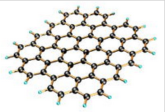
所以SANDRA的问题就是我们能够控制这个过程，然后确保会成功的在纳米涂层里制造石墨烯呢？
KESHE：等一下。让我解释一下。
RICK：问题就是我们需要在纳米涂层中用到石墨烯吗？
KESHE：任何材料都可以被做成纳米涂层，你不需要石墨烯。
RICK：所以我们根本就不需要石墨在纳米层中吗，比如在CUO涂层中。
KESHE：不是的，这个流动是等离子体的流动，而不是电子流动的。不是电子来完成的，流动是等离子体的。
RICK：有的时候你提到SP2和SP3的层，就是当你说这个的时候不一定需要就是石墨烯或者这种碳基的，只是这个结构对吧，而不是实际上说这个材料。
KESHE：是的。当我提到了SP2和SP3的时候，只是说它的传导性。SP3是一种金刚石的结构，是一种绝缘的电阻，SP2是传导性的，即使是氧化铜也有SP2和SP3，这种金刚石结构或者纳米结构。因为有一个小的问题，当我用各种语言的时候，有的时候我是说用这种世界上的科技界的这种通用语言。当我说SP3的时候我是说这种金刚石的结构，就是这种绝缘性，当我说SP2的时候是关于传导性，都是相同的材料，相同的碳，相同的涂层，相同的电线。如果你把两个电线放在一起的话，然后你就会发现，这种电流的流动从不会从一根铜线流到另外一根线上。我过去常常展示出这个，我把这些电池的涂层的线拧在一起，然后放到圣诞树的灯上，放在灯的底部末端，圣诞树的灯就会经常的闪烁。
RICK：那会是氧化铜。是吗？
KESHE：对的，是氧化铜。那个SP3的组合就是氧化铜分子结构的SP3，但是通过这个涂层流动的电流，它是用这种SP2的形式形成的，就这种传导性。相同的材料，相同的碳就是具有这两个共同的性质，这取决于你用它在哪里去连接然后在哪里去停滞这种连接。就非常像我对儿童们解释的那样，我必须谈一下这个，因为我答应了我要谈一下这个事情。你们要提醒我我要说某人，他说应该放出一个视频，关于怎么样去教导儿童，我曾经解释了这个给一个小孩，SP2和SP3的区别就是它的传导和它的绝缘就完全和马路一样，你如果想穿越的话你必须停下来，因为路当中一直有车在行走，你不可能开一辆车横穿马路，因为你会被罚款，这个就是SP3，这个SP2就是你顺着马路就在向下流动，这是相同的路，有一个方向上你不能驾驶，因为只有10米，在另外一个方向上可能是100米，这是相同的路。这对于分子的结构来说是相同的事情。只是因为它是非导电性的，然后它会做为一个结构，当你横穿的时候，当你把线放在一起的时候，这个时候它就是SP3的结构。这个SP2是这种超导体性质的，当你顺着电线走的时候就不会有损耗。因为这种SP2结构的纳米层所具有的传导性就不会有任何损耗。这个曾经是世界科学的梦想，就是去发现这种在常温常下存在的超导体。
这已经在你的手里但是你没有看见。（RICK插话）让我把话说完。如果你把这些线放在一个特别高温的烤箱里面的话，然后你就会从内部把铜给放空掉，你就得到了这种你有生以来最好的纳米管。这些纳米管在将来可能会用于这种治疗和连接我们的神经系统，因为它们的行为是完全一样的，但是这些纳米层可能会从氨基酸的层上进行制作。它们就会来替换掉你切掉的神经，可以定位神经系统。这个是我之后要在医疗方面传授的，是医疗领域的一部分。因为它们是完全一样的结构，在这个层的下面它有超导性，而在这种交叉的层次上具有绝缘性，这是为什么你不可能将纳米涂层，焊接，或者缝起来成为超导体，如果对于你来说太难理解的话，你就去拿2个已经做过纳米涂层的电线，然后把它们拧在一起，可以尽可能多的使劲儿的去拧，你喜欢拧多少就拧多少次，然后在一个方向上连接起来，但是连接的时候要把铜的涂层给擦掉，然后把一头连在电池上，另一头连接在灯上，然后你就会看到灯就会亮了。这就是意味着在普通的条件下，在电线中，在电缆中，两条线如果它们按照这种方式接触的话，电池就会堵塞了，灯就会被堵塞了，但是这个会发生。不会发生别的，你会看到灯会亮的，但是有一件事情你可能会看到并且可能明白的是，这些纳米涂层就是缝隙和洞，可能很多人都不明白的就是，你买的电池是作为小的直流电池，就是这种1V的电池也同样产生交流电，所有你用的电池，甚至他们卖给你的是9V的直流电池也是有交流电在流动的。当这些交流电流动通过线的时候，你就会看到火花，电线就会发热，因为他们在电势上创造了变化，就是有电势差。所以你可能就会看到你的电线被加热了。这个变热不是由于这种直流电而是由于电池里面的交流电，但是在平常的情况下，当你只观察到等离子体，你如果不把它连接到电池上的话，你就只能产生直流电，所以这个很容就可以明白，如果你遵循这个来做的话。所以说如果你想为你的系统制造电线的话，你就可以继续制造电池，可能像4节电池那么长，从上到下这种相同的环境。你就会制造一个1伏或者就是1.5伏的电池。我把这个设计给德克看过。我们把这个电池放在这个位置上作为能量的供给，因为你把纳米涂层放在了里面，在将来的时候我们会做很小的动态反应器，我已经要求ARMEN开始来设计它，就是当他回来之后。当他回来的时候因为他可以从美国回来得到微型的电机等等这些此材料。我们将会到下一个维度，就是我们下一代的反应器，你就可能会在圣诞节之前看到，就是ARMEN现在正在做的工作。就是这种2厘米直径的反应器。这些我们可能会做的更小，甚至比2厘米更小，做到1厘米，或者0,5厘米大小直径的反应器。然后在里面创造等离子体。这些会作为医疗方面的应用，然后我们就会释放整个的系统，比如一个杯子可以治疗各种不同的疾病，比如当我们在开放中心的时候，昨天我们的人就通知我们在8月底我们的医疗中心就会在在马耳他开放。在未来几个月乃至几年里，一个系统这样就可以给整个家庭来用，可以治疗各种的疾病。因为你就可以调节这个电机，可以根据你所需要的强度来调节等离子体的强度。这个就是现在ARMEN所要做的，希望他回来之后我们就可以把这个建立起来。他就可以向你们展示这种星体组合，这种星体组合的大小就和现在房间地面上放的陶瓷反应器相同。就像你们注意到的最初的反应器是非常大的，然后逐步的变得小，现在要制造这种陶瓷的反应器就会变得很小了。因为反应器的核心尺寸是无关紧要的。而它们是能够感觉到什么产生什么这才是主要的。(第三次翻译截止01:31:50)
我们正在慢慢的往那个方向前进，还有其他的事情我想在这里提一下，关于这个问题现在大家还有其他问题吗？
VINCE：是的，我现在有一个问题，当你在苏菲谈话的时候，你说这个不需要真空泵，首先我们想到可能是不是水，但是现在你提到了是甘斯，这个是具有真空性的所以不需要真空泵达到真空。
KESHE：是的，差不多这样。（笑）你离理解并不远了。因为我们现在是在一个封闭的盒子里面做这个实验，我们通过这个材料通过等离子体创造了一个磁的流动，所以更简单的方法就是你如果能够创造不同的甘斯，然后放在里面旋转，可以产生出等离子体，甚至就在中心创造出甘斯的等离子体，在不同的甘斯当中的这些磁场的旋转，就会给你的反应器核心中的等离子体一个动态的旋转，而不需用到电机。这就是在宇宙中如何进行的。
VINCE：我也那么想过。但是你这个做听起来有点怪怪的，甘斯在外面，然后是等离子体在里面。
KESHE：是的，但是你把不同的甘斯放在不同反应器的核心中，有不同的旋转，然后你就可以判断出不同的距离中场体会产生出什么，然后你就可以不需要电机就能在内部创造出一个动态的等离子体的旋转。非常有意思的就是我们和JOHN在上个星期在做一个实验，或者几个星期之前。我们在测试为什么这个蓝色半球的反应器，就是YVAN制作的那个反应器在它的上方产生了太多的场体而不是我们希望的会产生在底部。然后实际上就是紧挨着反应器核心的位置然后就出来了，往上到了一定的距离，好像有大约10厘米，场体就从反应器当中走出来了，然后立刻到微小的涂层上的时候，场体就往回走了，这里有一个特别特别简单的缝隙，往上到了这10厘米的距离之后场体的流动就是往上方走的了，在中间的反应器的边界就是反应器的大气层就变得不同，变成了接受者，这个是很有趣的现象。
VINCE：这个是一个自然的过程吧。
KESHE：这个界面，就是在两个反应器中间的界面就是大气层，这就是系统的磁引力场找到了平衡。这就是它的防护盾这个就是它的鸡蛋壳。就是在鸡蛋当中具有蛋清和蛋黄，这个是就我们所叫的大气层。在连接到中心反应器的线的内部就是反应器的大气层，这个界面实际上展示了行星是如何运行工作的，由于它们的磁引力场，它们从外部来吸收场体，同样的倒转过来也一样。不是所有的系统都会引起磁引力场的吸收但是都会有辐射，他们试探出了它，因为能量是从它的中心而来，这个是更加具有能量的，这些就是星体。这种连续的流动就是迫使场体向外部走。所以我们第一次的看到了这种第一个等离子体的形成，就是在我们反应器的周围做为磁引力场的单元已经几个星期了。我们测量了它，我想应该是10厘米，MARKO会告诉你们。我们直接把探测器放在挨着反应器的外壳附近的位置上，然后我们就把探测器往外慢慢的移动，就达到那样的一点上，它的场体就反了，所有反应器都是基本上这样的，没有多少变化。所以那一点就是大气层的边界，就是磁引力场的外壳，我们在实验室里面观察到这些我们没有记录，但是当我们都放假回来的时候，如果你们提醒我们，我们就会给你们进行展示。因为现在我们这里有设施就可以展示在这些反应器周围的大气层的创造。
VINCE：但是在每一个甘斯的里面也是有大气层的吧？
KESHE：是的，但是现在当你在里面放入大量甘斯的话，你就会发现它的聚集。
VINCE：我描述一下如果错的话纠正我，就是你也描述过，如果你用盐水，你有了氧化铜用甘斯，你在盐水当中制造出了氧化铜，不要让氧化铜来把你的纳米涂层的线给盖住，否则这样的话会把它封住。
KESHE：你等一下，你先把问题停一下，让我们先把细节搞清楚。这个封住的并不是把你的洞给盖住了，密封是在这种磁引力场的级别上可以被纳米涂层吸收住。
VINCE：是的。涂层就是它自己的吸收器。
KESHE：对的，纳米涂层就会阻止场体的到达。在这里你必须从那个物质进入场体的位置远离开，并不是说你把洞给填进去了，而是你把场体给封闭住了，因为它吸收了，因为甘斯自身吸收了一些通往涂层路径上的东西，
VINCE：好的，所以在这些线上面，我试图加入白色铜产生的甘斯，对不起，是用锌是被铜涂层的，这个现象有点意思，但是我就是尝试增加涂层，依照白色甘斯的种类方面，CO2甘斯的磁引力场会跟铜不一样吗？是不是就会有一个光谱上的不同呢？是不是就不会被封住，对吗？
KESHE：不是的。你只是把一些特定的磁引力场给挡住了，CO2不会吸收这个环境下的所有的等离子体的磁场，通过在上面的涂层它们只是匹配它自己或者比较接近它。这个可能会比较有意思，如果你能够看见在纳米涂层和CO2涂层之间的缝隙，如果你把它做的非常薄的话，你就可以看到了（被插话）
VICNE：我做了多好几层，我记得是5层，就是对一片铜箔进行涂层，然后加入一些其他的白色甘斯在另外一片铜箔上。然后用那样的方式放上了白皙的涂层，所以我刚开始这个过程，但是我现在刚刚要把它给放入到盐水中，就像把普通的铜放入其中那样。
KESHE：是的，但是如果你能够找到一个显微镜或者什么来观察这个缝隙，就是在纳米涂层和CO2之间的缝隙。它们2个从来就不会碰到一起。唯一你能够发现它们连接的情况就是：在铜的涂层和甘斯之间具有矿物质的地方，就像钙，这个钙就制造了涂层和甘斯层的两个层之间的内在连接。但是你静止的看那个缝隙，你不能够通过缝隙的方式把甘斯和纳米涂层连接起来，在层之间仍然还有还有磁引力场的缝隙。换句话说纳米涂层就是太阳，CO2甘斯就是地球。它们处在磁引力场平衡的地方，因为它们都有磁引力场。缝隙就是它们两个之间的强度的不同，任何东西如果垮过那个缝隙就会被纳米涂层吸收掉，现在你就等于限制了它，等于放了一个过滤器在上面。通过CO2你创造了一个过滤器，但是有趣的是这些纳米涂层是超导体，你的CO2甘斯也是超导体。你创造了一个三明治，这个就很像你的电池。
VINCE：是的。那就是我所想的。
KESHE：我做过这个测试，我用可口可乐瓶做过这些实验，但是我没有用那一类的材料，我向知识寻求者们展示的是这种1.5升的可口可乐瓶，有一个板子在瓶子中间，所以我把它充满了就是像这种3-4厘米长的铜板经过了涂层处理，然后悬在了那里。然后你看到了很多这样的等离子体磁场的行为，有一个很有意思的事情就是你说的关于能量吸收，当我在比利时的SCK核物理中心的时候，一个博士试图证明你看到的这个能量是幻想，是捏造的。但是他从来就没有理解纳米涂层，所以他把这个塞子放上了，然后密封起他做一切能做的事情，我们还一直在看到不论何时何处能量都能通过材料流出来，因为没有任何东西在那里是完全真空的，他说整个都是假的，他从来就没明白，他以这个为基础写了他的报告，因为他以这个为基础写的报告是完全正确的。因为有一个理由就是汉斯先生他就是IMEC的内部律师。他之前做过这些实验，他们知道这个是超导体。但是他们想知道我是怎么样制造出的材料，所以现在你们所看到的这些东西你们明白，但是对于他们来说是一种幻想，一种虚幻的能量。所以现在你们作为门外汉，换句话你们就比这些在比利时核物理中心的博士们明白的还要多。因为他们完全没有明白这是什么，他们就被告知要写假的报告。因为汉斯作为IMEC的内部律师，他们知道了这个材料，他们想要看到成分是被确认的，这个材料怎么被做出来的，现在你们亲自看到了。你制造了纳米涂层。
VINCE：凯史先生。
KESHE：嗯。
VINCE：你能检查一下你的录音或者你是周围的磁吗？
KESHE：什么？
VINCE：因为有一些碎裂的声音。
KESHE：啊，是的。（笑）就是敲击耳麦的声音。但是就是这个问题：很多科学家，如果你们去看IMEC的报告的话，就像10年前当他们第一次做这些实验的时候，就是按照他们的那种知识10年前第一次做纳米涂层的测试时候，那些涂层就是在我给他们在钉子的上面。汉斯先生这个对于凯史基金会的指控，因为他不能够插手这个事情，因为他是从另外一个前面的研究科研机构过来的。也是在太空科技领域当中的其他机构。他们知道这个材料会吸收能量，他们就指控我们用伽马射线，指控我们用核燃料的伽马射线来产生能量。现在如果有任何针对凯史基金会的控告的话，凯史基金会和这个事情有关的话就是说我们用核材料做事情，这就是他们怎么来要封锁我们的，你们任何当中在我们教学当中的人们，都可以到法庭上面告诉他们这个是很愚蠢的，因为这些人不能理解。指控我们制造伽马射线来产生SP2和SP3
，就是你们现在在家里做的事情。你们必须要认识到的就是就是当人们把这个说地球不是中心的人就给杀掉开始人类的这种无知就一直没有改变，现在这些人变得更加的无知了，更加的自负，用充满仇恨的工具来指责。我们所展示的就是纳米材料还有宇宙是如何运行的。还有它们的工作的结构是怎么样的产生制造出了能量，曾经作为法庭对我们指控说我们应用到了核材料，说凯史基金会是一个恐怖组织。
就根据汉斯这些人就处在这个位置上想把这些事情写入政府的报告中就留在了那里你就无法撤销了，你就无法撤销，只要他们指控你是恐怖组织，不管你走到哪里这个东西都记录在案了。汉斯这个人就写了这个卷宗，不管我们走到哪里。但是实际上换句话对于我来说是有好处的，没有使得我早早就传播出去这项技术，否则对于人类来说就要失败了。现在通过你们和其他的知识寻求者我们达到了这样一点，你们已经生产出了在IMEC报告里面公布出的材料了，我们就有这个自由来公布IMEC的报告。就怀疑创造了SP3，但是背景中的报告说我们用到了核材料做到的。现在开始每一粒盐都成了核材料了，任何的强碱材料也是核材料了，因为你们在做我10年前在做的事情。所以我们继续努力的去明白这个过程。我认为我们现在实验中得到的的这个缝隙是很好的，在这四周当中我们可以进行的更加细节让你们明白更多。有一个事情我想说的就是，你们有什么进一步问题吗？
LUCYANO：好的，凯史先生。这是LUCYANO。
KESHE：早上好。
LUCYANO:我有一个非常短的问题。早上好，在你继续之前我想让你注意一点东西，因为以前的话，怎么说呢，以前就像在讲童话故事一样就产生了很多的困惑。我告诉你这个是因为我感觉你对其他一些有一点悲伤，所以我是指的你今天早些时候所讲的，所以基本上我个人做了一些实验然后并联了一些纳米涂层的铜线，它们并不会储存电流，这是一个大概说的话题，具体而言就是，你今天说了当你做纳米涂层的第二步的时候，你放了数字万用表的时候，你必须要注意正极和负极，当你把它们连着串起来的时候，你就能够知道它们的顺序是正确的，所以我尝试告诉你的是你确信你所谈论的东西，但是我想跟你解释的是以我的经验来看，
当你把数字万用表放在了线上来释放，像你所解释的，极性是活跃的，比如在正负极是测量电表的正负极。在那之后，就是在一秒钟之后它就转移了，所以问题就是你怎么样做方向定位呢？
KESHE：方向定位是你必须要在它湿润的时候去做。
LUCYANO:是的。
KESHE：当表示是湿润的时候，一般来说你可以把这个取向定位给确定下来。当你做我所做的，因为知识寻求者们可以看到，我用了一个大的，也不是特别大就是70X30厘米这个，深度是6厘米的盒子。我曾经横着放了一个电线在上面，就像是干燥的晾衣服绳子似的。你知道晾衣服的时候绳子就把衣服挂在了上面。然后我底部有一个盘子，是一个网的盘子。所以我做的就是，我把我的所有的线都挂在了这些线上面。就像你晾衣服的时候当它们还湿的时候，一般来说你可以把你的万用表就是在容器里的环境下，你可以看到这种电流流动。所以你来决定你是往哪个方向。一般情况下我是这么做的。我把万用表的一端放在一个上面，然后我用另外一头的针一个个的去对点。而不是一直移动它的，这样的话，我就尝试创造一个流动的方向，但是我有问题，当我的线从外面往盒子里回放的时候，电流就反过来了，然后我就反着方向做，但是所有我做的我总是把相同的方向回到相同的线上。每次你做的时候你都会看到正负方向的改变，我们也看到了这种正负极的改变在我们的动态的反应器当中。流动方向就突然从正变成了负，如果你没有把探测器放在最大的话，我们就会看到极性的变化，你的动态反应器中也会改变极性，但是当它湿的时候，我发现我就可以更多的完成相同方向上的定位取向。
LUCYANO：如果我没有理解错的话，所以你把数字万用表涂层的线的负极放在盒子的外面，然后和正极的电线。
KESHE：不是，不是的。在盒子里面的时候，我是在保持一个位置上的。我不是用万用表的两端来做不同的线，我用一根线作为一端的参考，其他的就顺着这根线走，不论在在线上有什么，然后你就会发现，我很早就发现了如果你要是接触了线的一头当线是悬挂着的状态，然后你就等于在线的中间创造了的不同方向上的流动，你检查一下因为有时候你就会看到了。所以你必须要小心你是怎么样做的，你总会看到这种流动变正变负。这个很像是你在线里直接设立线的流动方式，当你在干燥它们的时候。在你从这个溶液里面拿出来之后，并不是说你去试图控制这个电流流动，但是是去探测或者尝试探测在涂层当中的电流的流动或者等离子体的流动，这个就是神经系统如何工作的。
LUCYANO：基本上你想尝试说的就是。请稍等一会儿。
KESHE：让我来说。
LUCYANO：因为我们必须从物理上明白。所以基本上来说就是这些线从上面的绳子上悬挂下来，你比如把万用表的负的一段放在液体，正极就只是接触你所悬挂的电线的上端。而在底部只是停在液体里面，从来就不用碰任何东西。
KESHE：是的，从来不用。这是我所发现的，但是你必须要回到那样一点来意识到就是我所说的要深入下去，在这些铜线上的涂层就和你的神经是一样的。神经系统不光传输信息到你的手那里来张开手指。但是也会同时接受信号如何合上，所以这些线就是根据环境中的能量是什么来工作的，这些是你需要明白的事情。是一个双向的这种交流，而不是说你在一个方向上的流动它就是一个方向的。这些是超导体，它们的磁引力场的势差来决定了流动的方向，你可以制造一个电池，然后你可以制造这些线相互连接起来，然后你就说这个根本就不工作。因为电池根本就没有被充电。然后你要回到这个你连接的线上，找到开关在哪里，有些地方你就拧的太厉害或者你改变了环境，就是有一些微小的不同，流动的方向就会改变，这个就有点很像真空系统但是这里面的是磁引力场的这种势差就会引起流动，然后你在和2个特性的磁引力场打交道，而它们不是可以触摸到的，这个不是电子的流动而是等离子体场体的流动。这个相同的电线可能会改变极性取决于哪一面的磁引力场的势差更高，这个是你必须要明白的。
LUCYANO：我只有一些关于实物的观点，如果你有两个电线的话，然后就像你建议的我把它们给涂层了，我想把其中的一条线的纳米涂层给剥掉然后连接到第二条线上，那么一个人怎么样能够检测等离子体的流动取向呢？，就是你怎么样来确定这种等离子体的这种流动呢？
KESHE：我通常的方法一般来说就是比较好用的就是，我有一个核心，我有一个手电筒，然后你基本上就在里面看不到任何的光，因为里面的一条电线是以错误的方式放置的，我没有把这个扔掉，我把它保留着，到时候我可以给你展示一下。我是怎么样做的呢，我把这些东西怎么放到里面的痕迹都保持着，我从开始就都记录了下来，我是怎么样悬挂的，我是怎么连接电流流动的，当我打开它的时候，我把这个放在了桌子上面，然后是用哪一端进行了连接，只是通过很多年的时间我就学习到这一点。即是说有的时候你留下了某些东西然后你就忘掉了你犯了错误，或者当缠绕它们的时候，就像我有的那个手电筒，如果把它们给彼此拧的特别紧的话，然后你就发现某些地方就会产生这种连接的缝隙，你就在其中会产生一个交流电，直流电。然后这个连接就会让手电筒放电了。所以实际上如果你认为你有10段线在一起，但手机你可能只用1段或者2段，这个过程就是这么多年中我学到的，我就一直在这么做，我一直严谨的那么做，即使你做的铜箔的实验也是一样。
KESHE：从这个电池里来的铜箔。
VINCE：因为一开始我做的层，就是用铜和CO2的涂层，当我把铜片放入这个盒子的时候，尝试看看我能够观察到什么。但是当我往盒子加多一点盐水，我就发现LED灯的极性就改变了，这些都是和环境还有位置有关，还有其中有什么。
KESHE：是环境，是的。因为有一个事情就是关于这些特别便宜的万用表。有的时候你就会发现，反正我扔掉了很多的万用表。我不明白这个，如果有的人如果有电子背景的话要给我解释一下，怎么会这样这是为什么，当你把万用表放在了直流电上去测量的时候，但是交流电会比较有效，不管你在里面是怎么做的，然后这个万用表就不好用了，我不知道为什么会这样，我们在发电机里面看到过这个事情。你们谁能够给我解释一下这是怎么回事儿吗？
LUCYANO：是的，这可能是一个解决方案。
在我的电池上有一个模拟电压表，它的显示指数是从0流到0.5伏，无论什么，有很多的单元是串联的，可以看到上面有多少的指数显示。模拟万用表里面有一个线圈就是它的装载量，在那之后，我还有一个交流万用数字表是并联着的在每一个电池上，还并连到了示波器上，就会给你交流电的构成了，用这种方式，你就可以去进行测量。
KESHE：你先教给MARKO然后MARKO再教给我，你跟MARKO解释一下，因为我不明白你在说什么，但是让我给你解释一些特别重要的事情，你在你的万用表上看到的这个正和负，我们在等离子体反应器里看到的也是相同一样的，等离子体反应器有的时候会吸收能量，有的时候它们释放能量，它们成为等离子体的供给者。因为我们有一个发电机的线接到了我们的电机上，提供出的这个能量就会回到我们的电源上，然后就把我们的电源给损坏了。就是利用这种平衡能所做到的。一般来说，通常没几个月我就会把它带到维修店里，等于去矫正它，因为我不明白为什么一直总是会产生这样的损坏。当我在德黑兰的时候，伊朗的电子工程师们，当他们就明白了我的问题，给我做了一个电路板停止这种逆流的发生，在那块电路板上有很多的转换发生，所以这种逆流就不会回流到发电机上。这种正负极的逆转并不只在纳米涂层发生，动态的等离子体反应器也会发生。在那个动态反应器中，我有一个电路，我可以停止它，因为实验室里有一个测量表因为这一点已经被损坏了，我们就把它放到了一边。因为电流表就不工作，因为这可能就是我们看不到的情况，所以纳米涂层和等离子体的极性变化是很普遍的事情，因为纳米涂层里面也是等离子体，只是被限制在了固体物质的结构里面了。所以我们很早就看到了我们知道，如果你在你的手电筒里或者电源里把这个弄反了，你就会发现它不能够给你充电了。有一个最好的方法就是你可以很好的充电，不管环境本身如何。当你制造手电筒的时候，你把纳米涂层放在比较接近地面比较暗的地方。这样就可以给出流动的方向，就是在电池里的流动方式。这些就是我根据经验学来的。因为这种电子的方面的事情我没有太多兴趣去追求。但是这正负极的改变其实是很普遍的。即使说你把你的万用表的一端放在一个位置上，然后你顺着线一直移动这一端，你还是可以看到这种极性的变化。或者你保持那一端在一点上足够长的时间，
，尤其像在可口可乐瓶里你会看到的极性的改变，那就是在可口可乐瓶的中的等离子体在朝着一个方向和另外一个方向的流动。然后你就会发现你的表显示就会从正变成负了，你可以在可乐瓶的测试中清楚的看到这些现象，还有其他问题吗？
（第四次翻译截止02：02：46）
VINCE：还是跟这种位置有关系吧，因为我之前在对我们的半球的铝反应器进行涂层的话，我知道如果我把它握着朝着地面上，在垂直方向上的极性就会不同。
KESHE:是的，因为你现在在跟动态的情况打交道，你创造了一个迷你版的地球。每一个都会必须要发现它的邻居的南极和北极来对它自己在哪里进行定位，地球的极性改变不是地球自己小部分的问题，不是小范围的部分问题，主要是由于在太阳系环境中的其他行星的影响。
RICK：我发现可以用我的手靠近或者远离内部有纳米材料的容器就可以改变极性。所以甚至连我的身体，如果我接近有甘斯材料的盒子的话，我就可以自由的改变电流的极性，如果和我的距离是恰恰好的。
KESHE：是的，这就是我说的。这就是JOHN做蓝色反应器的时候达到的，在一定位置上，场体的强度就会达到那样一点。你可以发现场体是会分层的。当你把纳米材料放在一个盒子当中的时候，你把盒子给盖上盖子，然后比如放几个小时，当你把它们挂起来让它们干燥的时候，然后你就用相同的万用表，不要碰触任何的材料。你就可以测量盒子中的等离子体的环境，你可能就会看在纳米涂层之间有很多悬着的东西，你就会看到很多东西，我花了很多时间来观察这个东西，在一个敞开的环境中你可以看到这些变化怎么发生的。但是在纳米涂层里面变化会更高，即使你在环境中拿手或者手指去握一个万用表，你也能看到读数的变化。但是一旦你在纳米层之间观看的话，你就会看到变化是如何产生的了，因为你创造了不同的环境。
KESHE：你能画一下吗？然后在我们的论坛当中发出来一下吗？
LUDMIL：可以的。
KESHE：所以这样的话其他的人也可以做了。你就可以把它发给我们，知识寻求者们就可以增加上去了。就像我说的对于这种电子电器的我基本上是一点知识都没有的。虽然我想去尝试理解它。这些事情是我们周围的人来给我们提供帮助的。意大利的电气工程师还有电工，做出了电阻然后把它们连接起来，这样发电机就可以克服由于极性流动对电源造成的损害。
LUDMIL：由于某些原因，他们叫它二极管电桥。
KESHE：好吧。还有其他问题？我们可以更深入一点讨论。
RICK：我只是想再次的确认一下。就是关于碳的石墨烯不会用于在这里，就是专门为反应器做的纳米涂层。
KESHE：我们没有用到石墨烯。我们有氧化铜的涂层，我们只有纳米材料。在这个过程当中就像我之前一直重复提到过的。根据比利时SCK的核物理中心进行测定的数据来看的。可能就是有8%的碳原子可能就被陷在结构里面了，就是在可口可乐瓶当中制造了这个结构。但是在整个烧碱当中我们没有测试过，里面有多少的碳。但是那些碳是无关的，因为你已经创造出了成百上千层的纳米涂层一层层的叠加上去。那8%如果有的话并不是很重要。
RICK：如果在特殊材料中会有，在纳米涂层最上面有什么最终不可改变的纳米涂层可以保护它们隔离开它们所处的环境吗？
KESHE：不用的。
RICK：那就是纳米涂层就是怎么样就怎么样，也并不需要去做什么吗？不是有那个橘子油吗？那个目的是做什么呢？就是被封锁在上面。
KESHE：我不用，不是。那个橘子油是这种柠檬的油，是为了使物质更有渗透性，它们在清洁剂当中，因为它们的分子结构特别细，这样就可以进到纤维当中。我们试了用所有的办法来破坏这个纳米涂层。
RICK：GEERT不是用过橘子油加到涂层吗？我以为是要在顶层制造一个保护层。
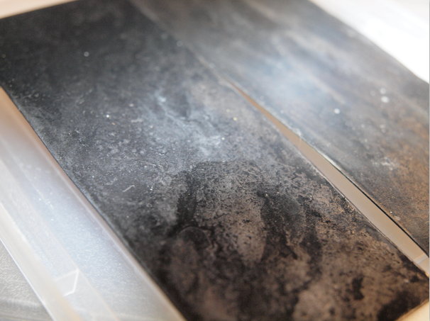
（GEERT的橘子油涂层）
KESHE：不是的。我没有听说过可以做保护层。
RICK：可能是（我想的）一些完全错了。（笑了）
KESHE：不是的。如果这些纳米涂层如果能够阻止它吸收这些场体的话，就是往上面放上物理性的物质。
RICK：比如，不用往上面放一个石墨烯的，想涂层一样的金刚石结构的碳原子层比如在铁的上面，在钢的表面，这样就可以保护钢材的表面不会被氧化。我很多年前听说过这个。就是这种只有一层的话，对于氧气起来说就无法穿过，那个材料就不会被氧化，如果他们对那个特殊材料做过这个过程。
KESHE：是的，因为你创造了一种磁引力或者磁引力场，它坐在紧挨着原子的结构位置上。它自身就是一股磁引力，所以氧气就没有缝隙空间可以进去。
RICK：所以那个对于反应器来说并不是需要的。所以说不怕氧气进入到纳米涂层当中，就是反应器。
KESHE：这个实际上就是我们现在对陶瓷反应器做的，我们进行了纳米涂层，然后放了水和甘斯到里面。我们有各种东西，有物质还有等离子体，还有纳米涂层都在这一个反应器当中。我们看到的有一个非常有意思的事情就是，在纳米涂层的层中它们会围起限制住等离子体，这个是很有意思的现象。就是它们如何可以找到磁引力场的环，就有一个磁引力场的边界。通过气体来生产等离子体的方式看起来是更普遍广为流传的，主要是建立中心鞘系统而不是把整个反应器给进行大量的涂层，在我们最初建立的系统中，我们用了来自不通电池的多片铜箔。在新的系统当中，就是ARMEN建立的新的半球形反应，金属板已经准备好了，当他回来的时候就可以放上去了。ARMEN就弄了一大张的铜片，因为在我们这里之前是买不到的。我们就有一整片，所以我们就不会在有那种一片片粘起来形成的不同的缝隙和层，所以我们就会看到更加有影响的系统，在下面几周当中就会有一个完全均一的涂层。但是这就给了我们连续的流动，我们还不知道。我们需要看看接下来测试会怎么样。实际上纳米涂层不需要保护层，纳米涂层在创造它们自己的环境，就像地球大气层一样不会让任何的东西靠近。（ARMEN早上好，我又看到你回来了！）所以你在那个涂层上产生了环境，那就是为什么它们看上去有一点自我保护。但是实际上它是磁引力场的防护盾，在彼此挨着状态下，
才有了产生这种看法就觉得作为防护层了，但是实际上是以一个磁引力场的实体存在而不是物质实体存在的。
VINCE：所以那个像钻石的涂层就是涂层本身，它不会让金属表面被吸取出来形成那个氧化物。
KESHE：好像就是那样，我告诉你一个非常有趣的事情吧，非常非常有趣的。也许你们科学界的人有这个工具的话会看到我们所看到的情形，如果你把这个纳米涂层放在显微镜下，在另外一个纳米涂层和它的场体的接触面上和它的环境中，你会看到非常漂亮明亮的白色的光，就在接触界面的位置上。即使纳米涂层我们看上去是黑色的，如果你看它的界面横截面的时候，看它们的场体和环境的场体，你就会看到一个非常非漂亮的白光，就是一片白色的光。你如果有光环探测器的话，你可以把它放在那个位置上。放到交界面上，放在一个薄的涂层上，就去做做看，你在两边都会看到线在你的氧化铜板上或者在你的铜线周围看到，你可以看到一个光环。你会看到一圈白色的光在周围
，非常非常的细，就是在那个界面上。它就创造出非常白非常细的白色的光。
所以事实上你叫的白天的日光就顺着出现在你管子上，有一个荧光就是在你的管子上面，沿着这个电线。你如果能够做辉光测试的话，然后你就会看见了。我们这里有有些人有检测辉光的仪器，我要求他们做这个测试。你直接就能看到纳米涂层的磁引力场和环境之间的相互作用，这就是我们的叫的天空中的白光，你有这种非常非常弱的白色光在的你电线周围。
LUDMIL：有一个好问题，你说是什么样性质的一种放大呢？
KESHE：需要一个人来看一下。你如果有这个机器的话你可以告诉我们。我们会马上就释放这个辉光，然后你们就可以看到了。反应器也会发生同样的情况。
LUDMIL：在YOUTUBE上面就有这种显微镜的照片。我就没有看到有什么样的光。
KESHE：你就仔细看细节吧，就能够看到的。它是非常非常的的细。是由于场体之间的相互作用产生的。
RICK：这种特殊的铜还有其他的基本纳米粒子的荧光性质大家基本上都知道的，所以这种现象可能在一定的条件下可能更容易看到，可能会在真空环境下。
KESHE：我们现在找到了一个机构，给大家展示这个。当这个做完之后我们就会释放这些照片。是非常非常细的线，特别特别的窄，你会看到的非常有意思的地方。
LUDMIL：放大20-40倍就可以看见吗？
KESHE：我不知道，你会看到它的，我已经让明白这个的人做了，因为他们有这个机器。他们是从德国来的。他们就会去那里然后带回来给我们看的。还有其他问题吗？
LUCYANO：是的，我想来澄清一个事情就是我认为它非常重要，所以我们都明白这一点，比如一个原子的元素，比如铜吧，在甘斯状态下是一个球，有的人说是0扭曲的，不管怎么说吧，它实际上是一个原子的状态。但是当我们有CO2甘斯的时候，我的问题就是它的结构还是分子吗？我的意思是有一个碳，和2个氧原子就是在20的角度上，因为这个化学里面所说的，可能在碳原子和氧原子之前的距离更短使得场体平衡？还是它们就聚在了一起变成了一个更大的球体呢？没有任何单独的原子了，他们认为这个不会这样发生。因为在光谱的描述当中，它仍然在吸收CO2的光谱。
KESHE：不是的。这就是正好发生的，这就所发生的，这个就是我称作的精神分裂症。是的，你知道让我给你解释下一个事情，会有一点点的不同。这样你就可以更容易明白了。我同样的方式对JOHN解释反应器。然后在那一点上，我们就看到了从正变成了负，
让我们用平衡的观点来从边界往反应器里面来看。从平衡的角度来看，任何一个位置都是相对它的环境变成了正变成了负，都具有不同的值，9厘米，8厘米。7厘米，这是一个相同的反应器，9厘米是CO2，比如距离7厘米的就是只是碳或者只有氧气。所以在相同的等离子体当中，按照它的磁引力场，相同的等离子体就是具有了所有的元素的性能。要取决于在环境中接受到的这个东西要成为什么，你不会得到这种不同的，比如说1个氢气的等离子体，2个氢气的等离子体，然后1个碳的等离子体，然后它们就以这种状态下彼此挨着的。然后它们就聚集到一起然后转起来。
就是这种我们习惯于在我们现在物理学界和化学界中描述的那样。所有这些都是做为一个东西来相互之间的作用的，然后都进入内部决定的它是什么，要取决于它们会吸收什么样的场体，你不会让氧气的能量通过你的胃部，然后在铜的能量，因为能量是作为一个整体过去，然后在你的淋巴当中作为一个能量团出现氧气，CO2或者钙。所以在CO2的甘斯当中你看到这个。
LUCYANO：稍等一下，因为这个让人感觉困惑。我说这个是我们所说的化学。所以当CO2被囚在水中，它就下降变成了CO2甘斯。就意味着。
KESHE：等一等。它们是一体的一个东西。
LUCYANO：是的，质子中子混在一起然后变成一个吗？
KESHE：是等离子体，是等离子体。你改变的是它的整体的等离子体的条件，不是每一个原子的条件。这个就是变化。是在甘斯状态的。
LUCYANO：对的。我明白了。
KESHE：是整个一体条件的变化。
LUCYANO：你把它们叫做中子，质子。它们都在那吗还是它们都把能量融合到一起了呢？
KESHE：它们所有的磁引力场的能量都加在一起之后变成了一个磁引力场了。你看这个环境中的，我认为是在第三本书当中用了一个简单的方法来解释了这个。就是磁引力场在中子的尺寸上，在这个宇宙当中并不一定和其他的宇宙一样，因为它们的条件是不一样的。就是中子的等离子体分裂变成质子和电子两个等离子体。所以这个跟你的CO2是相同的，在中子当中的场体具有足够可以产生一个质子和一个电子，但是它是一个个体。在甘斯状态下，中子就是自己等离子体的甘斯状态。在甘斯状态下CO2也是一样的。当它分裂转变成物质的时候，它才会分裂出来单独的碳和氧。但是当它在这种等离子体的状态的时候它就是一样的状态。
LUCYANO：所以说它即使保存它相同的质量。
KESHE：是的，没错。
LUCYANO：因为我认为当到显微镜下看的话显示的还是CO2。
KESHE：是的，这个就是我之前给你解释的，我以为你明白了这个。这就是为什么我们看到的在物质当中的甘斯或者材料在显微上它是相同的。为什么它们的光谱一样。如果你明白这个了，你就会明白怎么样调节到在宇宙中的不同的行星和不同的位置上，你就会被吸引或者被排斥出来。所以这个质量从。（被插话）
LUCYANO：我还有一个问题。因为我们还是在这个问题上，有的人会试图去明白在医学上这个部分，就是和你让人很困惑。当你给氧气原子能量的时候，通常来说在主流物理学界，一个原子就会吸收一个、两个电子的情况。在那之后就会进入到磨碎的状态，所以我要问的问题就是，就像你所解释的就衰变成了氦和碳，如果只是直接给你这个能量的话它不会发生衰变的，所以一个人怎么样才能够通过技术设备来产生裂变呢？就是像你所需要的那样的裂变呢？就是分裂成氦和碳的磁场的质量呢？看上去这些主流的人不知道怎么做。有什么样的设备呢？
KESHE：是的，你为氦或者碳制造这个环境是平衡的，在我们的肺部中的结构是完全自动的的。在我们的肺部当中的结构就是会允许使得它自动的变成了碳和氦的，因为它制造了这种环境。
LUCYANO：我理解，但是通过仪器要怎么做呢？
KESHE：我到时候会教给你的，那个时候你就会学到了。我会在医疗部分中教的。你会学到那个然后你就会测量了。你可以作为等离子体引入或者可以拒绝。或者接受它，或者被你的身体吸收或者作为什么，这种分裂成两部分，就像碳，氧气或者氢气，这个可以通过外部的各种参数来实现，我会在甘斯状态展示这个，当我们创造出了这个甘斯的状态时，我们就会展示如何做。根据你所创造的质量，你可以决定你想要吸收什么。这个是和你的飞行系统是一样的，你创造了一个磁引力场，或者创造出你想要达到地点的质量，到宇宙当中任何地方，即使在宇宙中的任何地方你叫它真空，但是它对于那个位置还是有质量的。就好像当你说你看到海洋，你可以看到这个。这个海洋当中的水是相同的水，但是特殊的位置你可以达到，因为质量你把它叫做GPS点，你就通过相对那一点的质量找到那一点。没有任何东西在宇宙当中是相同的，在相似的点上，不管不幸的或者幸运的。在这方面的知识你在将来会学到，如果你有氧气或者碳原子的甘斯或者分子，它们怎么样变成甘斯，现在你就习惯于电子的位置，使得这些连接分子，用单独的键还是双键，你还是要回到中子的分裂上，你就会明白的更清楚一些了。这样你就可以逐步的去明白下一步，中子并不是说其中有2块东西，一块质子一个电子，它们都是一个东西。然后它会分裂成2个能量团，这个两个团总是相同的，你总会得到一个电子和一个质子。因为它的质量在那里。所以CO2在分子的结构当中也是一样的，在这种原子的结构当中。现在我们做的就是希望在将来能够理解的更多，通过很快我们要和日本进行工作，我们就会更容易的明白，利用正确的方法。就是用氚作为甘斯状态的氚，用它来制造物质会特别的精彩。因为在日本有足够多的氚在水中，我们有很多的机会来测试这个。所以我们想要有福岛的材料。我们现在在那个方面在做一些独立的实验，所以（被插话）
LUCYANO：我猜想，我们可以测量一个特殊物质的磁引力场，可以设计出这样一种仪器吗？然后就可以单独的去测量。
KESHE：是的，是的。
LUCYANO：是吗？
KESHE：是的，是的。你必须要做这个，当你在宇宙旅行的时候，如果你想去月球的话。
LUCYANO：我在说我们的氧气的实验。
KESHE：这是一会回事儿啊。没有区别的，你只是想在毫克还是公斤进行工作而已。没有区别的。在将来，科学上会制造这些系统仪器，在下面的几年当中人们会利用这个来进行飞行，就像现在人们用的电子计算机系统，只是一个工作范围的问题，在实验室当中我们有2个探测器，一个是针对非常低的，一个是针对非常高的范围，实际上它们在测量场体上是一样的高斯表。一个是用于测量金属，一个是用于测量这种低的能量，就是测量像组织的这种等离子体。在实验室当中，知识寻求者们想要找出它们这2个数值之间是怎么对应的。我们就能够明白我们在做的，因为我们只有两个探测器，但是它们是探测相同的物质。
所以在下面几周中，我会再预定两台，这样我们就可以同时在外面和里面都做这个层次的工作，这些东西需要时间来进行合作，然后我们才能够得到。所以这个就是问题所在，你没有小鸡或者马，它们其实都是鸡，但是你有小鸡和大的鸡，我们就是以这种方式考虑的。各种甘斯材料的等离子体，你可以决定你想要什么。它们之间是没有区别的。在太阳系当中也是没有区别的。这个是限制你因为你自己的智力产生的，如果你打开了你的思维你就会看见，此刻你的头脑中有足够的知识可以做一切事情。这个就使得我感到很奇怪。还有其他问题吗？
VINCE：我只是想让你知道我放出了两个链接在那里，一个是纳米涂层的铜箔，就是用我的显微镜照了几张照片。但是我确定的是大家都明白IPHONE是非常暗色的，所以拍的照片效果并不好，所我不能用这个照。结论就是，我们可以变成专家。
KESHE：（笑）我同意。我们会要求从事高科技的人来看一下这个。当我收到的时候，你也会看到。因为能看到这个是很重要的。我们看到了不同的等离子体和不同的气体之间的相互作用，但是我们必须可以做，我们去看看能不能够得到这个照片。很像晚上看一个东西一样，这样我们就可以看到夜晚反应器的运行或者在白天的时候，你就可以看到这个线。这个仪器是非常高昂的，我们一直更期待合作，而不是捐赠。我有一点想在现在提出来的是，从某人提出来的要求，就是开始教育儿童。开始从基本的部分开始教，我想如果你需要从基金会得到任何的帮助的话，我们会准备来支持你们去建立这种基础的教学，用简单的方式教这些小孩，比如通过一些小的演示。可以给不同的年纪段进行展示和说明，这个是我们需要做的。如果谁想给某人一点帮助的话，就是来建立这种对年轻人的教学。就是用一种特别简单和有趣的方式和方法，就像我说的物理学是很有趣的。我准备对这个进行支持，以各种我们能够做到的方法来支持，比如甚至我们可以通过在这里的这种小的演示。
可以进行一些课程，因为我知道有一些政府也想做这个事情，开始这种从小教育的教学，这样你就不用教两次，在后来你再告诉我至今教你的都是错误的还要再以一种新的方式再学一遍，所以这种青少年的教育是国家要进行的，但是当如果有人能来做这些，可以组织变成不同的语言。所以如果这个解释了需要做的事情的话，我们会支持你，你可以告诉我们你需要什么，然后我们看看可以做什么，我们有一位先生，他对进行这种展示是特别专业的，就是ARMEN。就是做这种小的比较有意思的事情，这样这些年轻人就可以特别快的明白。就是非常快的以一种有效的方法明白这些概念和想法。所以现在可能是时候了，从只教导大人来教导这些小孩，因为他们就可以更容易的学会。就是ELIYA告诉我的。她的女儿。就是她如何向孩子解释她们就会跟着学了，然后我们这些人也会学会了。有其他问题吗？
（第五次翻译截止到158:05）
RICK：这可能是很快就要进行的事情了吧。在GOTOMEETING这边听的人还有问题吗？还有LIVESTREAM上的？（VINCE插话）
KESHE：什么？
VICNE：他们在讨论是不是ARMEN想进来，但是进不来。ARMEN，你检查一下你的麦克风吧。
KESHE：他现在醒着呢有点奇怪，现在是10点半。
RICK：我现在有个问题来自于聊天区域，是BRAT问的。我认为这个问题可能刚才已经被解答了，但是我现在还是把它给贴出来让凯史先生看一下吧。地球上过去是什么样的条件使得恐龙或者其他生命长的那么大呢？
KESHE：之前是因为磁引力场的强度更弱一些，相对于我们的星系的位置而言弱一些。（VINCE插话）让我先把这个解答完。就像我之前解释的，当宇宙的结构里我们就是在这个星系的磁力的翅膀上面，我们是距离后背的一个更遥远的位置上，这样的话就会有更多的空间，所以地球的大气层虽然一般大，但是它具有更大的一个外围的包裹，有更大的自由度可以漂浮，因为有比较小的限制强度，所以就会允许各种不同的生长发展，如果你想实际去观察一下的话，最好的方法是你最好去看一下在你的系统当中的甘斯的结构，你如果对你的甘斯增加压力，你就会看到相同的甘斯改变它的范围，稍后我会跟大家展示这个，你们都会看到。它并不是一个真空的条件，它是磁场的条件，是磁场和引力场。现在在我们越往星系中心越来越靠近的时候，是由于星系往中间的引力吸引，这个环境就更加的密集。地球的大气层在2600-2700万年前，或者1亿年前的尺寸和现在的尺寸是不一样的，允许有不同的生长情况发生，在很多方面上，在过去在有大体积的动物仍然残存的活着，这些动物很多还是在水中的，这些动物就对外界条件和环境更加具有免疫力，我们看见鲸鱼还是有很大的体重，虽然大象现在看起来矮小了一点，这个就是有的环境是被保护起来的，所以使得它们能够还可以继续存在，使得它们仍然具有之前的尺寸，和之前的尺寸一样，虽然小了一点，但是当随着我们往中心移动的过程，就是被我们周围和中心的其他的场体压缩，相同的的过程现在还发生在地球上，就像我之前解释的，我们正在被拉近到太阳中心的位置上，就往太阳系的中心拉拽。中心具有更强的磁引力场，所以这个使得在一些不同的高度有不同组织的生物在宇宙中形成，下一个问题。
VINCE：对不起，线路有一点延迟。在这个进程中。（没声了）顺着那条路线，地球在星系中有不同的磁引力场，现在在这样一点上，在星系和太阳系中，地球就会得到它们的磁引力场还有质量，就是和来自太阳的等离子体的流动产生相互作用，会使得不同的层在地球上产生。
KESHE：当场体变成物质的时候，你从引力进入到不活动的状态中了，这个是巨大的不同。当你有了引力，有了磁引力场之后，它就会添加到等离子体的条件，当你变成物质状态的东西，你就变得不活动了,它实际上是相同的东西，但是它是在那个外壳的结构里面，所以你不会在总质量上有增加，你仍然处于一种集合的簇的状态，继续吧。
VINCE：我想说的就是，如果你扒开树的枝叶你仍然可以看到密度，就像树的光环一样，我们仍然可以看到这种不同密度，那就是我们要在星系中要穿越的地方以及我们在太阳系中的位置。
KESHE：我不明白。
VINCE：是地球的不同的层。
KESHE：噢，这个是可能的。我认为我可能会跟我的家人说过，如果我不能变成一个核物理学家，我就会成为一个地质学家。因为如果你看到这个地球的地质结构的话，就会给你展示出很多我们曾经的状态，我们在太阳系里面曾经经历过了什么，部分是由于星系给了我们这个结构什么，就是在我们的星球上的材料所吸收的部分，不是由于内部的核，而是从太阳系的环境吸收的，由于我们从外边界在走向中心的过程中，所以我们可以知道我们会想到在木星的表面会看到什么，就是当我们在木星的位置上的时候，因为我们所吸收的东西变成了物质，这些就是那些地质学家们从来就没有往这方面去看，因为他们认为我们的地球一直在这个固定的位置上，但是就像我说的，我们的这个星球之前是在冥王星的位置上，我们是从那里开始的。当我们被往内吸收的时候，就像流星那样，我们就逐步的长大了。逐步的吸收了更多就变成了我们现在的一个星体，我们变成了木星，我们变成了土星，然后变成了火星，变成了地球，然后变成了金星。所以地质学家们可以告诉我们，看我们在各处所吸引的东西。
VINCE：这是不是也是由于我们处于这种动态的环境中，所有其他的东西都在还是相同的尺寸，或者以同一种方式在不同的尺度上，这不是说意味着这些行星们会彼此相互作用，然后通过相互作用就改变他们的位置。
KESHE：这个发生过，也还是会再发生的。（VINCE继续问）不是，我们变化了位置，我们是变化了位置，你会发现有一些行星本来是在我们前边或者后面，有的行星以前在我们后面，但是现在在我们的前边。不只是因为这种碰撞，但是由于太阳系外的磁引力场的力量。
VINCE：是的。
KESHE：比如地球有可能会在木星的位置上，然后由于相互作用就占据了火星的位置。然后就到了金星的位置上，你创造了一个条件，然后别的行星就会找到它的平衡，我用桌子上面的磁铁展示了这个，我们试图把这个录像下来，然后给你们进行展示。
VINCE：好吧。但是在特定环境下，你面对的是等离子体，这些等离子体在旋转磁场，所以你基本上在处理大的反应器但是具有很多的这种等离子体的势能，它们会跟其他的行星相互作用。由于它们可能是由相同的东西构成，不管怎么说它们就总会有一个内在的连接，所以它们有这种内部的相互作用实际上可能会有释放能量，可能以这种形式。就是在这些行星之间或者很多行星之间，你觉得这个可能吗？
KESHE：这个发生过的。这个一直都在发生着。地球和木星是直接连接的，它们的位置和场体的强度上是直接联系在一起的，木星就不会在那个位置上如果地球不在现在的位置上。
VINCE：是的。
KESHE：如果我们能够更清楚的明白这一点的话，让我这样跟你解释吧。你知道我们以前曾经说过这个，我们的那些反应器现在是在二维的情况下，我们现在所有的8个反应器是固定的，因为它们下面的柱是固定的，这些新的甘斯反应器，它们是在这种滑轮上。如果我不知道ARMEN是否把照片放了出来，它们在这种可以旋转的滑轮上，其他的反应器的场体在移动的话就会改变它们的位置，在以后的下几个月中我们会把它们悬挂起来，所以实际上你就可以把中间的反应器做为太阳，
就通过改变甘斯来开始理解，现在我们就看到了万用表上的读数改变，很快我们就会看到这些反应器会改变位置在实验室中，因为我们会把它们悬挂起来了。当ARMEN能够制造小反应器之后，然后我们就会有足够多的小反应器，它们相互联系起来，然后我们就可以给大家展示三维的结构，然后你就可以告诉我们能否看到氢气的性能。然后我们放一个反应器做为母反应器，具有小一点的能量。然后就可以看到它们之间的距离如何改变。我们就可以预测它的下一个位置是什么样的，这就是我们将要进行的发展，然后我们就可以创造一个条件使得有中子、电子、质子。然后我们就可以看到氦气是怎么表现的，然后我们就可以复制地球和太阳系的条件，这并不是很遥远的事情。在圣诞节之前我们应该有一个三维的反应器，就可以对很多事情都会给出答案，同时对于太空科技也是一样。我们要如何从一个位置走到下一个位置。相对于大的反应器如何来复制这种小反应器的情况，我的想法就是，如果我们在下面的12个月中达到这个效果的话，如果能够制造一个星体组合在小的系统当中，我确信ARMEN可以能够做到这样一点，我们把这些小的反应器悬挂在大的反应器之间，然后它们都挂在密封的盒子里，然后看系统如何运动，然后我们就可以理解系统的运动了，在这些太阳系当中不同的行星是怎么样运动的，但是在让我们跑之前先让我们学会走路吧。在目前的情况，我们正在爬行，我们开始爬行的情况是比较顺利。
VINCE：下一个问题。
KESHE：好的。
VINCE：下一个问题是关于纳米涂层和等离子体，但是我们一直在发这个视频然后进行讨论，关于频率还有声音，音波，结构还有等离子体。当我们在的一个环境中用这些声音允许某些结构能够显现出来，这个会和等离子体的结构有相互作用吗？在我们的涂层当中。
在等离子体反应器当中。
KESHE:当然有的。是的，是的。什么是声音？声音就是磁场。当然有作用了。当你增加声音的时候，你就可以使得它有比较均一的条件，是你在和谐的状态下，所以反应器的等离子体和这些甘斯会处于一个相同的新环境中，所以你就强加了条件。
VINCE：这个声音就可以以你想要的方式构建等离子体，形成某些特定的结构，内部的结构就会是一些特定的结构。
KESHE：是的。
VINCE：如果我们处于不同的环境中，我们就可以创造出不同的结构。（笑）
KESHE：没错。让我给你解释一下吧。如果你会到上一次或者再早一次的教学中，我解释过母亲的心跳决定了大脑里面的声音和身体里的结构。什么是心跳？就是磁引力场和声音，所以当然可以了。你创造了那个环境那样大脑就可以创造了。如果没有心跳的话就不会有大脑了。这就是我几天前在这里教给医疗人士的，母亲的心跳决定了儿童的健康程度。医生只要听这个心跳，为什么你会有高血压？为什么有些母亲总是会紧张，在丈夫的压力下工作，这种压力会传递到精神上，会产生一些影响来破坏身体。这就是心律失调。
LUCYANO：所以一个人有心脏问题的话，所以你给她一个压力的来源，给一个健康人的，那么那个人是应该离开那个环境呢？
KESHE：我不知道。就像一个老年人和特别年轻的女孩结婚，但是会把他给害死。你知道这个。我还在线吗？能听到我说话吗？
VINCE：那得是一个好的心脏的条件。（笑）
KESHE：我认为这个是一个非常好的条件，因为需要有一个特别快的心跳，这个并不是肌肉可以做到的，你要看这个整体。
LUCYANO：这个有一个特别重要的理由，有人的心脏有一个金属的阀门，我妈妈就有一个。就像以前的瑞士的机械表，我在想这个会不会引起疾病呢，举例来说，如果你把它放在静脉或者动脉，或者什么东西上，就像一个小的机械装置一样来推动泵，在一种规律的频率下，那种情况其实就足够了，我在想这个是不是会提高大脑的循环呢。那样它就可以改善大脑循环和病人的基本情况。
KESHE：我不会对这个发表任何看法。但是我知道你在说什么，因为我母亲是有同样的问题去世的，因为心脏的阀门是有一定的寿命的，当它寿命到期的时候，心脏的跳动改变了，会改变和身体相互作用，有的时候由于阀门的失效，大多数时候在其他的情况下，由于这种引力在血液循环里，由于心脏所产生的磁引力场，会引起癌症，一般来说你会在胃癌或者肝癌跟这个都是有关的，这个是有一个问题就是因为阀门会有一个使用寿命，成为一个机械的或者大的阀门，或者新的合成体。当新开医疗中心的时候，我会开发这个心脏的跳动，我允许心脏的泵能够自己再重新再生，这个是可能的。但是在这个情况下会产生其他的一些条件，但是是的，甚至我们可以让这些阀门自我修复。现在的科技和知识使得我们能够做到这一点。希望我们的凯史基金会医疗中心在马耳他开业的时候，我们中心就可以在更大的范围上和马耳他政府合作，共同作为一个主要的研究机构来开发各种系统。对于治疗各种疾病。我很清楚你在说什么。我很清楚你说所的事情的原因，我很清楚该做的是什么。因为就是我跟我妈妈经历了这一切。其中一个问题就是当改变这些阀门的时候，大多数人听的时候可能会有兴趣知道，我们很清楚的在细节上看到了，就是这些阀门为什么会坏的一个原因就是，就是因为这两个动脉往大脑提供养分就是通过了脖子，这是因为医生没有看到动脉，然后把这个问题留在那然后又一点点堵住了最后才想办法做这个。所以实际上发生分的是心脏一直是在往大脑里面提供血液，而在两个动脉当中会有一些阻塞，就在你的脖子和耳朵后面把血液供给到大脑，使得这个大脑正常工作，当这些静脉被堵塞的时候，当你60-65岁之后，如果这个时候你去医院让医生把你的静脉打开的话，把这个东西给弄出去，就是这些钙和残留物堵塞了动脉，就像用勺子把这些残留物给挖出去，它们就用发现在母亲子宫当中的小孩的超声波设备，就可以以这种方式在你的脖子的静脉位置去测量一下看看是不是有限制，但是最大的问题是这些医生他们从来不明白，他们在医学院中从来没有被教这个，当任何时候一旦你看到这个阻碍就要想办法把它给清理掉或者弄走，因为随着这些阻碍增加后，它就会给心脏带来压力。因为心脏必须要增加压力，就会使得有同样的压力使得更多的血液到达大脑，所以这就是给阀门增加的压力。然后就会使得阀门第二步工作的时候有问题，很多这种阀门就是心脏阀坏掉了，替换掉了，尤其这些阀门在供大脑的血管出口，由于这种一毫米的血管。如果医生理解其中的含义的话是不会让它增加，你如果发现用一个办法来清洗它的时候，或者你很早就清理过，所以这样就不会引起压力。所以这种限制就使得阀门产生了这个问题。你就要换这个阀门，实际上当你放一个心脏阀门的时候，你就给这个人的生命期限就定下来了，因为这些是机械的系统，它们会不工作。一般来说，换阀门的话10年就要换了。可能会出现一些机械的问题。这些医疗人员们都知道。任何时候如果你看到了这种往大脑中的血液动脉有阻碍的话，请你最好做点什么。因为这个后果就是阀门的失效，然后就会有更多的手术，然后你要看一下这个结构清理，我们已经发展了这项科技使得血管可以被清理，用一个特别慢的方式，就是非常慢的速度。因为如果你允许这个溶解到你的血液中，它就会通过你的尿排出去，因为如果你一下子把它们全部都清理掉的话，然后你就会产生脑出血和各种问题。在6-12个月的期间使得你的身体能够产生这个条件，这样身体就会溶解它，我们就在我们的研究有机会做了2-3次，所以这些知识都是有效的，如果医疗人员想要用的话，但是对于这个手术还有一个问题就是：当他们对阀门进行清理的时候，他们放入一个夹子，（背景出现噪音）有人打开了电话或者麦克风。
VINCE：我想ARMEN把麦克风打开了。ARMEN？
KESHE：没有，他还在背景当中。所以实际上发生的就是在一些时候，当就是在手术进行某个环节的时候他们会打开，然后清理动脉，这个医生不能够做错。在他们重新放上夹子之前是不能有残留物存在的，当他们缝上动脉的时候。他们就把这个卡子打开然后让血液流到大脑。那么一些材料就可能会进入到血管中流到了大脑当中，就会对大脑产生副作用，使得人会产生一些功能失调。会引起一些大脑的损害。我们开发的这个过程可以帮助那个手术，可以停止这个手术产生的损害。可以在早起实施，当你做超声检测的时候你看到了你的血管中阻塞，你就可以用这个技术来逐步的减少。至少降低到一定程度下，你就不会引起以后的心脏或者阀门的损害。还有其他的问题吗？
VINCE：是的，我还想继续这个问题就是关于频率的。因为我们还在这个主题上。我发现了一些信息，上面说声音的信号从木星来的，说在过去的30年当中发生的变化。他们认为这个是不可能的，所以什么东西会引起频率的变化呢，对于一个行星来说除了这种磁引力场的影响这种解释以外还有别的解释吗？
KESHE：你能再重复一遍吗？我听不懂。
VINCE：对不起，他们测量的就是木星的频率在30年当中有了改变，那么是什么让行星改变了频率，除了磁引力场的影响以外，还有什么在这个行星内部改变了呢。
KESHE：那个材料，频率就是物质。而不是等离子体的。是你在那个频率上的物质，或者是在那个频率上产生的物质，通过木星的核产生的，因为这个材料的变化我们在反应器中看到过。这个变化，我怎么样才能解释的让你明白呢。这个就非常像淋巴。这些淋巴都是一样的，产生了相同的场体，当到某一点它变成了钙，它的行为就像钙一样了。或者作为分子的形式成为了氨基酸的一部分，在转动的星体就在这些场体内部制造出了材料，可以改变这个物质。在一系列的行为中，比如说你有铀，由于内核的相互作用，然后通过在等离子体中创造出了太阳的条件就会增加，因为这一系列的活动，之后就变成了钚。所以你现在有了不同的频率在物质的层次上。在中心内核中的物质改变是一个非常常见的过程，这个同样也发生在人体当中一样，这是没有区别的，这是相同的事情就像我一直在解释的。这个频率的变化因为它们达到的地方就使得它们必须吸收，来看有什么样的条件，怎么来变化的，变成了什么材料。通过这个你可以看到主要的中心核变成什么。每一种材料在物质层次上都有它自己的频率，所以你可以看到它的材料在内部的改变。
有有些我要说的是。（VINCE插话）
VINCE：这个东西可能压根儿就没有在行星的内部，也许是由于周围的月亮的结构引起的，和它的等离子体相互作用。
KESHE：是的，多少是这样。它们必须要制造它们必须产生的，我们看到了这些在我们实验室中的密封的环境当中。我们改变了一个反应器里的气体，我们能够看到盒子外部的探测器的变化，但是频率的话是物质层次上所允许的，但是确实是它的内部材料的改变来决定的。在这种里面的物质并不是一直都保持着相同的。尤其它们变成等离子体的时候，就它们内部的等离子体也会变成不同的物质。
VINCE：是的，这就是解释了之前它们怎么样来回改变。
KESHE：有一件比较有意思的事情就是，我教了一些东西给一些灵性方面的人。
（第六次翻译截止03:07:20）
KESHE：就像大家知道的，我们教大家从物质跨越到灵性方面，也就是灵魂。我被问到如果灾难来临的话，地球上所有这些人的灵魂会发生什么情况，比如说我们大家就这70亿人一下子就都消失了，作为人类而言就具有灵魂，是灵魂产生了太阳系，灵魂产生了地球。我们的灵魂作为一部分会加入到太阳系的灵魂，然后太阳系的灵魂再加入到我们的星系也就是银河系当中。这些灵魂是不会有例外的，都是被固定在一个链接上一个方向上作为整体的一部分。所以当这种事情发生的时候，你就会像一个氨基酸钟分子，原子作为人的一部分，人的灵魂和所有人都通过场体的相互作用联系在一起的，所以作为一部分，我们是一个灵魂。但是作为整个所有的灵魂，我们构成了这个星球的灵魂。所以这样我们就是通过灵魂来找到你，我们不是通过个体来找到你，我们是通过行星的灵魂来找到你。然后我们的这颗行星用它的结构为太阳系创造了灵魂，对于一个物理个体或者一个实体上都是相同的事情。在很多方面来说，在星系之间或者这些星体之间间隙的地方就是灵魂所在的地方。人类会在合适的时间和进程中会明白这一点。但是我们会对这些进行更详细的解释，我们很快就会跟大家展示实验室中的这个反应器的灵魂，我们对待反应器是作为一个个体的。但是我会把它展示给这些知识寻求者或者这个世界，当你们都准备好了的时候我们就会展示这个反应器的灵魂，因为当你制造了这一个个体的时候，你为它祈祷，它是具有灵魂的。反应器的灵魂就会显示出来。因为任何个体自己会做出决定，然后给大家共享，它在环境中跟其他的一起来共享这个场来达到平衡的。所以它是一个决定者，所以有多少它会给予的或者多少它会保持着的，它会具有一个生命。曾经有一个问题被提出来，问题就是：我们这个星球达到这样一点的时候，人类会发生什么，所有的这些存有会怎么样如果发生了任何事情的话。我用一个非常简单的方法解释这个事情，可以让大家明白，我们已经开始了教导人类怎么样去发现救赎他们自己的方法，还有离开这个星球的方法，在那最后一个时刻之前。如果我们做到了那样一点的话，然后我们就会变成这个宇宙结构的一部分了，就会和其他的成员在一起。如果我们达不到这样一点，我们看到了很多这样的阻碍，有个别国家作出的还有一些人试图来阻止这个过程，他们想待在物质上，在他们所在的位置上。因为大家好多人都在谈论UFO，还有比如说这种飞碟，然后我们里有很多人就知道我们会变成他们的一员，就等于是进入太空俱乐部了。我们自己对我们人类自己所做的，所以如果我们想要看结果的话，就要看我们平行的世界，当动物走向灭绝的时候，它们将来会灭绝。我们进入丛林，我们去到它们的环境，然后我们把它们收集起来，把他们放到动物园里。然后至少我们有一个可以至少保留下它的DNA，就像现在的这个样子，所以这个时候动物园就取代了丛林。我们把这个环境毁坏掉了，作为人类，如果我们不能够把人类作为整体联合起来一起作为一个整体走出去的话，我们迅速的达到这样一点的话，那么就要维持动物园的这些或者就需要保护好环境，就需要去拯救上帝的造物了，然后有那样一天，他们会发现适合那些造物生存的环境。在这种情况下，所有这些我们叫做UFO的这些，我们看到在我们的周围一直飞行的这些物体，我们每一个人因为我们不能在他们的环境当中生存。我们每一个人中最有可能的就是世界领导人们可能会被他们第一批被保留起来的，因为他们要保持留着最厉害的狗或者最厉害的狮子，就会作为这些宇宙中的动物圆笼子里的囚犯，直到找到一个我们可以活着的地方，这个不是恐吓。这是我们人类面临的挑战，这是我们宇宙的现实情况。当我们有动物园的时候，有很多的死亡发生，因为这这些动物会死去，所以我们把这些熊猫放在了动物园当中，
还有一些很多白色的狮子，还有你们叫的白色老虎，我们就可以把他们放在动物园里这样就可以保存起来，然后我们再把它们送到其他动物园里，在宇宙当中有一些动物园，那些造物保存在那里，直到为他们找到一个地方可以生活居住。所以我对那些世界领导人还有世界宗教领导人的直接要说的就是：如果全人类不能作为整体一下子联合到一起发展的话，使得人们能作为一个整体够站立起来，你们会是第一个进到动物园里的。对于那些等着想要拯救我们的人们，他们并不是来这里搞任何破坏的，他们是来帮助我们的。这些世界领导人们会成为宇宙动物园里的猴子。这一段话就是直接对所有世界领导人和世界宗教领导人讲的。我听到了有些人说教皇在准备一个类似的演讲词，就是关于有什么在宇宙当中存在的，这些知识是给大家免费提供的。作为我们的这些访问者，他们是来拯救人类的人，但是这样的话人类就必须保留在人类自己的环境当中了，你不会把大象和企鹅一起放在水里的，动物园会为企鹅准备的动物园，大象会在它自己的动物园，每一个动物就会根据他自己的环境被喂养，没有人会去到非洲的原始森林然后带回一个一条腿的有病的大象，他们会去拿一个最好的带回来。所以我的讲话对于这些世界领导人们会成为一个在宇宙动物园里的动物。所以如果作为人类来说，如果我们不能够联合起来的话，如果我们不能够迅速达到这样的目标的话，世界领导人会第一批进入到动物园，他们应该可以做一些事情，当他们还在那个位置的话，可以为我们全人类服务，这个不是童话故事。我马上就会打开这个环境，让你们看到这个动物园，这个就是为什么我们开始制造这些笼子，这样的话呢你就可以创造一个环境让其他的存有进入到这个笼子里面。就在我们太空学院的实验室当中，我们不会一下子就告诉你们很多，不会把所有事情都告诉你们，当我们跟大家展示电线的时候，但是你们都在找自由能源，就是在你们手里握着这把钥匙（线），你已经达到那样一点了，你已经达到了。世界和平和世界宗教和平，还有这些各个国家的政府之间的和平是必须要一步达成的，惩罚都是没有用的，包括宗教或者试炼。那些现在一直在进行杀戮的人会伴随行星的消失一同消失掉。因为这是他们应该要去的。以宗教的名义来屠杀这些儿童，或者把人们放到监狱当中。这些人将一百万人囚禁在监狱的角落中，然后轰炸他们。（03:16:301
million people in one corner and ????to ?????,very soon
），很快的，这些人会和这些贪婪的人们就会停留在这个星球上。这个决定已经做出并且已经开始执行了。在这之前不会有任何信号。
VINCE：那我们这些尝试让那些其他人理解宇宙结构的人会怎么样呢？
KESHE：我们选择是根据灵魂来选择的，我们不会根据肤色还有你的物理的样貌来选择。不管你穿着多么洁白的衣服你称呼自己为世界宗教领袖，我们知道你的灵魂，就是你身体当中的灵魂是什么样子的，我们不会在乎你的物理结构。你可以是个盲人，我们可以这样来理解。我最近和我的儿子是这样解释的，如果你天生就没有胳膊没有腿的话，因为你在马路上走你没有腿和胳膊的话，那我怎么样才能活呢？我说但是他说你有一个灵魂，然后你的整个身体是为灵魂而工作的，你的物理身体是没有关系的。这些世界领导人他们进入战争为了得到更多的钱财，这样可以有力量。那你在宇宙动物园里就是最好的动物了。因为我可以给你们展示这些都是多么可怕。我们不会把狮子和鹿放在一起。我们不会饲养救赎这些被驯化的猛兽，我们会慢慢的而且清楚的打开整本书。
VINCE：那么对于那些灵魂，就是在此之前比较明白情况的人会怎么样呢？
KESHE：你的位置已经被拯救了，但你不是唯一的一个人，让我对们解释为什么吧，当你到一个国家，当你不管到哪一个国家，你总是要去看国家领导人如何，因为国家领导人是国家的象征。你想改变这个政府的话，你就要改变政府的领导人。当那个时候到来的时候，同样的对种族领导人，世界领导人都是一样的，他们会成为宇宙动物园中的榜样。不是维持保存，而是为了展示他们可以有多么的坏。就是他们作为领导人的时候允许其他人的死亡发生，所以他们是多么的野蛮未开化的，这些机会就创造了条件。数量变得不重要，但是能够看到他们有多少的表现就是那么希望到这些宇宙动物园里面去，因为他们不能够相互的交流，他们也不能够混在他们生存的环境当中，因为那里没有空间。所以最好的话，如果这些世界领导人想留在这个世界上，就是你们称为的“光明会”，不论你想把他们称作什么，他们就是可以控制一切的人们。你们的救赎就是你们需要把这些世界的人们团结到一起。利用你手中的权力来做到这样一点。所以你那个时候你到时候不会独自的到笼子当中了，但是你就会在一个社区当中，然后跟其他的人在一个环境中，就是和有一定条件社区的人们在一起。他们把很多人单独的囚禁起来，他们就说很多人是给自己制造了一个囚笼，然后变成了它们自己创造出的囚笼的囚犯。世界和平，世界的宗教的结合在这个地球上是需要尽可能更快的达到的，不是因为我们对于这个问题没有答案，而是因为这些世界宗教领导人们会变成第一批宇宙动物园里最好的猴子。他们会过来然后看他们对他们捶弃，因为他们对自己同类所做的一切，不会表扬他们。
VINCE：下一个问题。就是我们这些人已经明白了这些。在近期当中，能够得到更多的理解，建立我们自己的起飞系统。这种情况下会发生什么呢，我们知道一些，或者他们知道，就是我们作为一个种族准备好达到这样一点了。
KESHE：我们的种族可能不是，但是有一些达到了那个状态，你们是通过你们的灵魂是可以认识的，你会变成这个结构当中的一部分，因为你们都是相同的，让我们这样讲吧，你如果把我们这些所有的世界领导人把这些制造军火的工厂放到一起，然后让他们具有这种机器可以到太空中去，他们是不会走出很远的。因为他们会被他们所具有的知识所限制，所以当飞船到达一个地方，带着你的枪械和武器，有一个现在很时髦的东西，叫什么来着，但是也是特斯拉的一部分。
人家是知道这一点的，所以你还没到那里就会被限制住，人类这种屠杀的习惯必须要改变，因为我们不看人的身体，我们看这个人的灵魂。我们知道他们计划要做什么，如果他们希望有一个飞船可以把他们带走的话，从这个地球你不会从走出多远的，你即使走出了太阳系也不会走出多远的。因为他们的打算别人是知道的，所以他们为什么会允许你来制造更多的破坏呢？当他们当时就可以直接在你所在的地方改变你，这个并不是唯一的一次，这个曾经发生过很多，然后还是会发生的。就是这个系统的过程，就是设置好处理这类的事情。我们不会让几个动物来破坏改变宇宙的和平状态。所以现在就是像我所说的，当你去接管一个国家的时候，你就要去接管它的领导者，这个就是他们所做的，所以就把它们叫做动物，当最后的时刻到来的时候，就是狼接近羊的时候，这些人就教自己世界领导人，世界宗教领导人，然后这些宗教领导人你们就会祈求相同的事情了，但是这一次你的时间会非常短，你从来都不知道。但是你从来都不知道，你甚至不会成为这个的一部分，当你坐在自己的动物园里。直到人家帮你发现了一个地方，一般来说这种动物不会给它们的机会来存在，他们就允许它们经历自然的死亡过程和条件，最后我们就拿走他们的灵魂。所以我对那些人直接去说，你知道我是不会犹豫的，我的呼吁对于教皇，对伊朗的哈梅内伊，对所有这些有世界的宗教领导头衔的人，我不是对某个人讲话，我是在对整体来说话，即使对于世界领导人，如果他们的行动不是为了把所有人类联合起来的话，为了达到这样一个目标，如果不能够作为一个家庭走出去的话。当这个时刻到来的时候，这个监狱里的囚犯就会是世界领导人，就会成为一个例子，对于宇宙中其他的存在而言。他们所做的，和他们如何允许使得他们的贪婪使得人类种族被消灭。在这种宇宙中我们可以把你留下，但是不是为了你的生命。不是说像你的生命那样，可能不是说保持你100年或者多少年，我们会把你留着很久的一个时间。这些就是我要对这些领导人所说的话，让他们到一起然后结束世界战争，然后把这些用于制造战争武器的钱用于发展科技，所以人类可以和平的以一个家庭的身份走出这个地球。不然的话我们不知道如何来教导你们，如果我们很好的教导你们，你们的身体就会活得足够长的时间，使得其他的人们能够像你们学习，然后你们就会作为一个榜样。这个就是直接对尊敬的奥巴马先生，还有中国的领导人，还有非洲领导人，你们联合起来作为一个整体，要不然其他人就会将你们联合起来留着很长很长的时间，还有其他的问题吗？
VINCE：怎么样我们才能够停止这种屠杀呢？
KESHE：为这些人的灵魂祈祷，引导提高他们的灵魂让他们知道自己的错误。你们看到我对汉斯，对比利时国王祈祷过。
VINCE：这个关键的就是人类曾经为这些犯了严重错误的人去祈祷。
KESHE：这个是你只能够这样做。为什么这个人昨天出生在巴勒斯坦，然后出生的时候母亲就去世了，因为轰炸。这个就是你在电视上看到的图像，但是那些人应该有这样的生命就是他们长大没有母亲，很多人会被他们的继母所虐待。然后一些人，或者有一些被他们收养的人来给他们一个生活的机会。他从来就没有母亲，谁杀害了我的母亲，所以这种仇恨就会继续。
为什么？非常奇怪的，当我们现在还那么做的时候其实还在造成同样的事情，如果你看一下这个孩子的行为，就是在以色列，他们做的没有比摩西做的少，你能够够看到白人仍然在继续这个行为，你们读到过摩西的生活，他就在试炼中把那些所有支持和抚养他的人消灭掉了，所以以色列人，巴勒斯坦人，还有犹太人都相互对彼此做了什么，他们杀害了这些给了他们生命和支持他们的人持续了几千年了，就是因为有一些人在制造武器，制造他们的敌人，为什么？？（低语）为什么一个政府像英国这样的政府要花费几百万的费用来在20年前开始运营BBC世界新闻，当他们发布这个消息的时候我是在英国。然后他们开始建立了BBC这样的世界新闻机构，如果不登广告的话它是无法运营的。我对我的父亲说这些是战争的新式武器，因为现在他们利用媒体你不需要利用子弹，然后你知道了这种媒体的条件，然后进行这种战争，放入摄像头工具然后来制造这些杀戮和革命，然后在不到20年之内就证明了我们的说法是正确的，在过去，当他们习惯于用攻击来获取奴隶，就是通过攻击，杀害并逮捕他们，把奴隶带到美国，现在他们利用媒体和不同的世界新闻，因为即使没有战争他们也会用媒体制造战争，他们通过国民来完成他们的“革命”。我们从你们那拿走了太多上帝的爱，然后你们就知道要付出的是什么了，如果你做这种惩罚的话会发生什么呢？就像默罕默德或者谁说的那样，我们把上帝的爱从以色列中拿走，因为他们对基督所做的事情。然后我们看到了他们分裂到了全世界，如果把这个上帝的爱给了他们的话，大家可以看到他们所做的都是什么，他们仍然还是没有吸取教训，所以没有必要再去重复同样的事情。所以一样的，同样的对于这些默罕默德的追随者他们，他们做错了那么他们的追随者就会得到惩罚，现在这些正在被逆转，（03:29:09
now ,that has been ???, its called be
equal）所以这个就叫做平等。所以没有任何的问题。你没有时间了因为你具有一个人的身体，在宇宙当中我们有的是时间。有其他的问题吗？
VINCE：非常感谢你的深入的讲解，感谢凯史先生。
RICK：是的，这非常让人惊奇，非常感谢凯史先生。
KESHE：我希望世界领导人会收听这个教学，我们知道他们会听到的。他们明白这个改变和这些条件，非常感谢你们。
VINCE：在我们走之前，也许JOHN或者ARMEN要说点什么吗？或者有不同的，我知道ARMEN有时差，但是JOHN可以说点什么事情吗？在这次教学结束之前。
JOHN：现在我们在试图建立这个系统，就是在我们这个国家的人也会进步，在非洲，有一些交流是比较困难的，所以这里面虽然可能不如我们那边进步的比较多，但是我们还是会做。然后我们在连接这些线，再把这些线连接起来就像我之前做的。还有小的反应器，我已经在太空学院已经展示过一个有3厘米的核心，我知道这个是很重要的。我仍然还有一些问题，就是跟这些不同物质的比较，就是和固体和液体当中的甘斯状态的比较，不管怎么说，还有一些问题需要解决，现在越来越明白的再推进事情向前发展，我们必须要试图去明白或者可以做到使得其他人明白这些，必须以这些方式来往前走。但是实验是必须要展示一些方面，虽然一些可能是走的是岔路的话，可能那个时候我没有完全的明白。在这些实验背后的东西，这些实验在那里，但是我们必须去看，所以我会继续这样做下去。
KESHE：带我像你的家人问好，我知道你一直没有停止工作。
JOHN：是的，非常感谢。我还没有一直全部的听，所以不知道今天讲的所有内容。所以我还是非常感谢听到了刚才那一段，就是我们在进行着什么。
KESHE：我们不能让ARMEN让上线告诉他在进行什么。就是他现在的进展，他在这个时间需要休息。
VINCE：他现在好像在麦克风上。
RICK：那就给他放到下一周，也许是特殊教学，也许不是特殊教学。或者这个教学的一部分让ARMEN给我们一些启发，就是用他的最新进展。
KESHE：是的，他具有这种天分可以把这个知识变成物理表现的，这个是非常好的。这个是他的新的方式就是他对学院的贡献。他容易把这个更深入的带到下一步，换句话，比如我们一只手上有五根手指，每个都具有它可以做的使得手以正确的方式来工作，所以我感谢所有的知识寻求者们，为他们来到这里所做的。
RICK：我非常感谢ARMEN的这种创造力，好像每个星期或者2个星期就会出现一些特别出色的新想法。
KESHE：：他的想法总不在盒子里面，他的树一直在长（笑）。
RICK：我想你可能是说他的那颗纳米线缠着的树把。
KESHE：是的很多方面上，我们在这里是为了服务，就看我们能够做什么，非常感谢今天，非常感谢你们所花的时间。希望那些听的人们能够知道将来要发生什么。
VINCE：这个就是家庭作业就是看我们谁制造出了。
KESHE：看谁可以设计出能量最大的系统，在暑假结束之前在日本人之前制作出来。
RICK：听起来不错啊。但是有一个能量制作的竞赛，以一种友好的方式来进行。没有哪个主要的合作会去举办这样的竞赛。
KESHE：是的，都参加了。正在工作着了。不要忘记当你们给线做涂层的时候，你们必须来保证你们的线的一头端点必须完全摩擦掉，把涂层完全去掉，这个是非常难的，因为涂层你要是不能够清楚的彻底的话它们还是会再次出现的。然后你就会发现你连接不好了，然后你就会看到你的系统不工作了，所以你需要花稍微多一点的时间来保证你做好这个工作。然后你就会发现你想加多少LED灯就可以加多少，加入电容，可以为所有电池快速的充电了。但是你要确定你不会把这些电线一个放在另外一个的上面，或者不要和另外一个放的太接近。因为这样可能会用到系统中的交流电，会创造出交流电的条件，这样就会使得你的电池放电。所以我们现在给你了所有的窍门来看谁能够最先制造出一个系统，如果你能够制造出一个系统有7个LED灯的话，然后你就会有足够的灯亮了，如果你家里有铜线的话，可能大概需要2米长，这个就会够你产生足够的灯光了。（两人同时问问题）
Sandor：我可以说点什么事情吗？
KESHE：可以。
Sandor：我知道有一个问题，就是好的连接问题，就是当铜线被涂层之后，所以这样我做了一个实验，涂层的时候我就使得一部分电线在外面，然后在容器的外面，当在容器里面做涂层的时候，所以我让线能够一半是涂层一半是未涂层的，所以这个可能是一个技术的解决方方案，可以避免往下磨损，所以就可以产生好的连接。
KESHE：是的，我们也做过这个。但是如果你看一看可口可乐瓶的话，这个就是涂层的话是一直走出去的，到时候还是会走过去的，当知识寻求者们回来的时候我们会给你们展示，我们把铜的钉子放到可口可乐瓶中，我们把它们给封闭起来，过一段时间后涂层就还会长出来。然后就像我们人类的皮肤那样，它也会横着长也会竖着长，所以最好的办法就是去破坏第一层，因为第一层会导致涂层的生长，如果这个层再出现的话你必须要把它给磨掉，但是如果系统不工作的话，它意味着涂层又长出来了你需要去发现是哪里长出来了。有一种方法可以阻止涂层在上面再长出来，我试了有时候有效，就是最后这一层你不想让它涂上的话，你把它们放在汽车电池的酸里面沾一下。
Sandor：我是用内聚酸做的，它膨胀了10%。
KESHE：是的，如果你要用电池当中拿出的酸的话，有的时候它还可以管用。但是有的时候可能会把涂层更往里的地方给破坏掉。
Sandor：酸当中会把涂层给去掉而不会把铜去掉吗？那个电池中的酸是比较弱的酸。
KESHE：是的，我们是试图使得涂层被破坏掉，但是它还是会长回来的。不是特别奇怪的，它就像皮肤一样会长回来。这就是停止它的过程，如果你建立的这个系统不工作的话，你连接了所有的线，然后你的电池如果不能充电的话，那么你有的应该把有氧化铜涂层去掉的地方它又长回来了，这样就会产生绝缘的情况，所以你的电池就不会被充电了。我以不同的方式看这个现象我已经看了很多年了。当我试图发现解决方案，或者如果谁有解决方案的话可以告诉我们。
Sandor：我想在涂层的上面做铜的电沉积，我想有一个简单的问题就是，昼夜电池，就是每一个电池都要用这种纳米涂层的线还是只用没涂层的线就行呢？
KESHE：所有的东西都要经过涂层的。
Sandor：好的。
KESHE：我们做了两种情况。我们都是在球面的球体上做的，你们已经看过我们用过了，我们做过这种涂层就是有用到液体和没有液体的都做过，放在液体中的在晚上会更好的效果，但是这跟你在哪里和你所处的条件有关。我们会在和一些科学家在星期四，星期五的做些实验，当我们的学院关门的时候我们为这些政府寻求各个方面可以用这个科技。所以有一个情况就是这种在液体当中的昼夜充电板，当我们看到这个现象的时候，专家就立刻明白了这个事情，然后他们就说1.67%，就是他们就曾经期望这个太阳能电池可以提高的数值了，然后就可以得到更好的效率。现在是给他们提高了百分之百，你们就会看到我们这个技术的发展就会进入到大的企业当中，不会说在这些小工厂他们那里，这项科技在走向商业化的时候，现在会走到在这个行业中特别有能力的人的手中，因为他们明白，他们的表情就表现出了喜悦，他们不想很快就离开大楼，现在这些技术被一些世界上主要的公司理解了，他们会进行商业化，他们不会再进行等待，自从上个星期四整个这个游戏就改变了，所以这就是为什么我们要吸引政府还有这些大的机构，如果他们明白的话，因为他们就可以改变，因为他们有设备，他们有这个资源和资金进行改变。所以我们看看会发生什么事情，这些科学家星期四-五在这里，就对他们一直没有意识到的摆在桌面上的东西感到更加的惊叹。我知道我们可以想象以不同的方式来做这个。我认为可能会比较惊奇，就是你不能用一个电极，或者一个经过纳米涂层的电池，我不这样认为。除非在那个过程当中，你允许一些使得钙可能会对应连接，如果你想做一层来和你的纳米涂层来连接的话，然后做一些涂层，也许涂层会是进入到钙当中，然后就在上面制造出涂层，因为这就是人的骨头是怎么样的，这个是有可能的。我认为我们现在是不是应该结束，因为我们今天进行了很长的时间了。感谢大家，感谢你们的帮助。
RICK：感谢凯史先生，感谢所有人。
VINCE：感谢凯史先生，下个周四见。
RICK：21次网络教学现在结束了。所以下周四第22次网络教学见。
KESHE：现在21了，所以我们可能已经成熟了。（大笑）
RICK：还记得我们10几岁的时候，（大笑）
LUDMIL：我已经57岁了。
KESHE：55到57岁很容易就到了。
RICK：大家再见。
（第21次太空学院教学全文完）